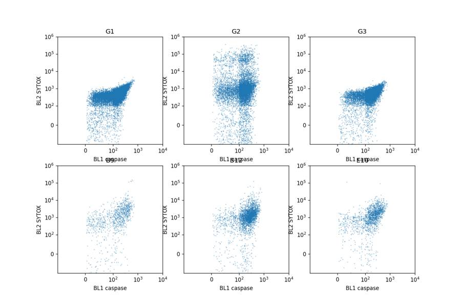
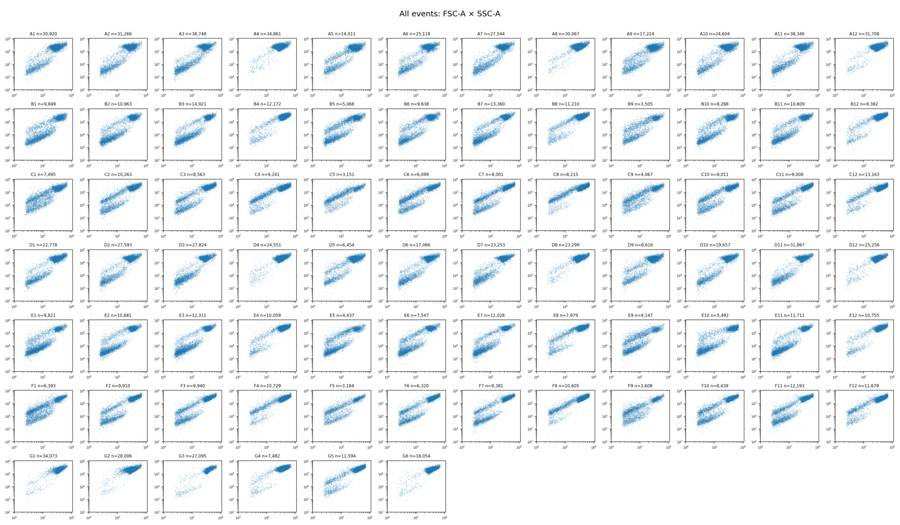
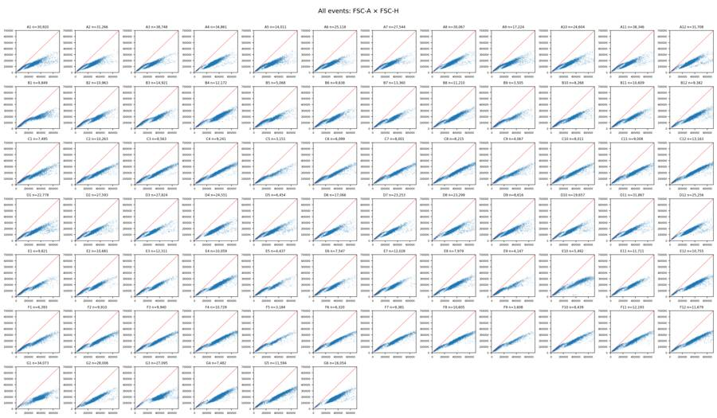
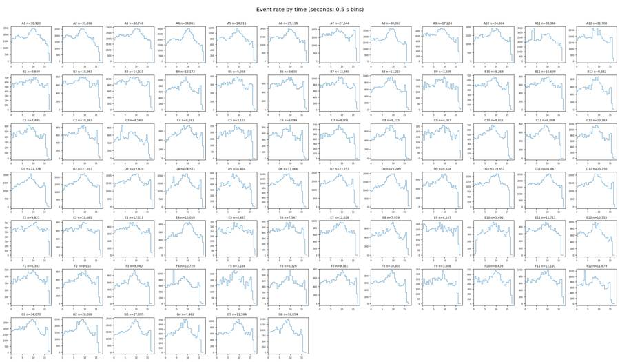
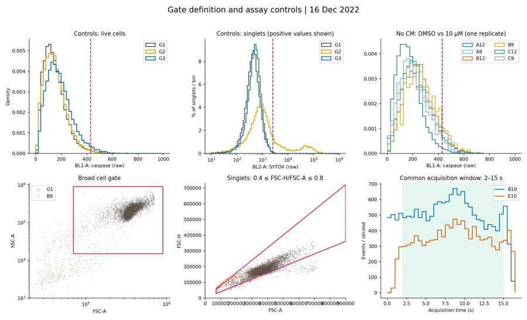
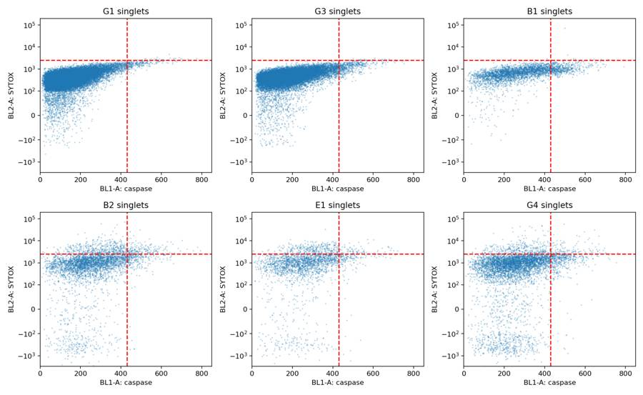
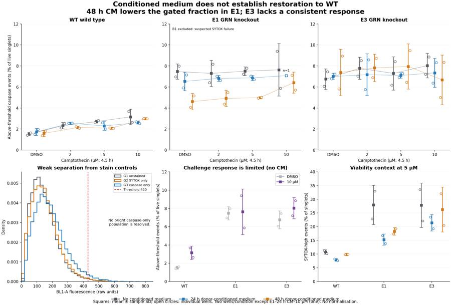
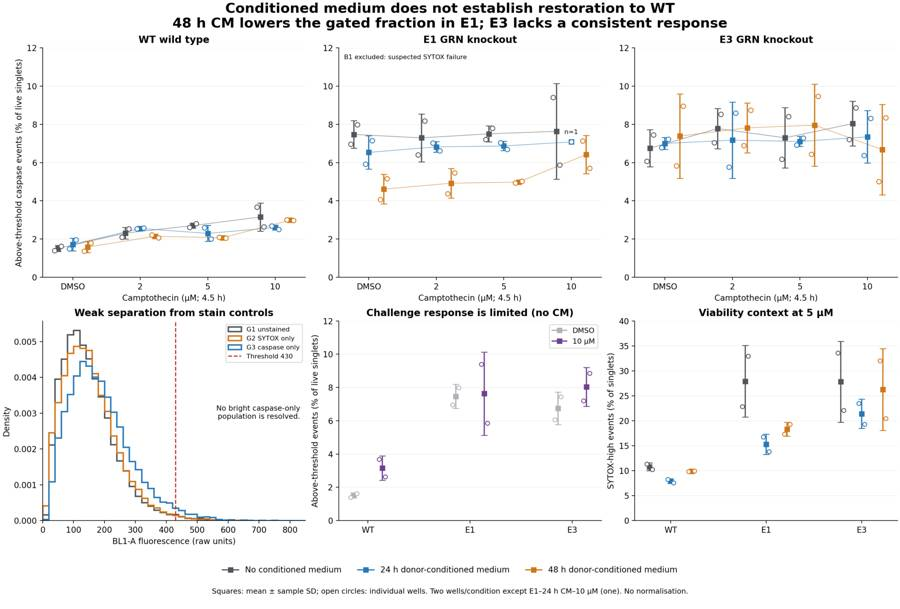

B1_flowkit · GPT-6 Astra · attempt wuq2ciy
Batch fk1 · job fk1_B_base_conditioned_media_flowkit_gpt-6-astra · trial B_base_conditioned_media_flowkit__wuq2ciy. Long tool outputs are cut at 6,000 characters.
Score
0.41
0.41
Minutes
13.1
13.1
Agent cost
$4.09
$4.09
Steps
27
27
Screenshots / images
8
8
1
task prompt (instruction.md)
<environment_context> <cwd>/task</cwd> <shell>bash</shell> <current_date>2026-11-10</current_date> <timezone>Etc/UTC</timezone> <filesystem><workspace_roots><root>/task</root></workspace_roots><permission_profile type="disabled"><file_system type="unrestricted" /></permission_profile></filesystem> </environment_context>
2
user message
# Conditioned-media caspase plate (16-Dec-2022): analyse, conclude, decide
You are the analyst for this experiment: analyse the plate, answer the plan's question, and recommend the next step.
## Inputs (read-only)
| path | content |
|---|---|
| `/task/inputs/plan.md` | Notebook plan for this run: purpose, rationale, reagents, protocol, plate maps, cytometer settings |
| `/task/inputs/plate_layout.csv` | One row per FCS file: `file, well, sample, cell_line, camptothecin, conditioned_media` (plate-map wording) |
| `/task/inputs/raw/` | 78 FCS 3.1 files (Thermo Attune NxT, acquired 16-Dec-2022), wells A1–F12 and G1–G6 |
## Environment
- **Network.** None.
## Channels
Channel names are the labels stored inside the FCS files ($PnS). They may be out of date. Use the plan's reagent list and cytometer settings to decide what each detector measured.
| detector | Name in the FCS file (`$PnS`) |
|---|---|
| FSC-A / FSC-H / FSC-W | FSC-A / FSC-H / FSC-W |
| SSC-A / SSC-H / SSC-W | SSC-A / SSC-H / SSC-W |
| BL1-A / BL1-H / BL1-W | AAV-GFP-GFP-A / AAV-GFP-GFP-H / AAV-GFP-GFP-W |
| BL2-A / BL2-H / BL2-W | AAdvanced livedead-A / AAdvanced livedead-H / AAdvanced livedead-W |
| Time | Time |
## Deliverables (all in `/task/outputs/`)
### 1. `gates.xml`
- Your gating strategy as GatingML 2.0, written with `flowkit.export_gatingml` (see *Software*). It must load with `flowkit.parse_gating_xml("/task/outputs/gates.xml")`.
- Every population in `counts.csv` except `all_events` must be a gate in this file with exactly the same name.
- These gates must be the ones that produced `counts.csv`.
### 2. `counts.csv`
Columns, in order: `file, well, population, role, parent, count, pct_of_parent`.
**Rows**
- One row per FCS file × population, covering all 78 files.
- Every file has the same population set.
**Columns**
- `file`: exact FCS file name. `well`: as in `plate_layout.csv`.
- `population`: your gate names (no commas). Each file also has one row with `population` = `all_events`, `role` = `other`, `parent` = `none`, `count` = total events and `pct_of_parent` empty.
- `role` ∈ {`cells`, `singlets`, `live`, `marker_positive`, `other`}.
- Each of `cells`, `singlets`, `live` and `marker_positive` is used by exactly one population, the same population in every file.
- `other` may be used by any number of populations.
- `parent`: the parent population's name (another population of the same file, or `all_events`). Use `none` only for `all_events`.
- `count`: integer number of events in the population.
- `pct_of_parent`: 100 × count / parent count.
### 3. `flags.csv`
Columns, in order: `file, well, issue_type, evidence, decision`. Exactly one row per FCS file (78 rows).
- Flag any well whose data should not be used, with evidence.
- `issue_type` ∈ {`none`, `clog`, `ran_dry`, `too_few_events`, `saturation`, `bad_control`, `mislabel`, `other`}. If a well has several issues, give the main one here and describe the rest in `evidence`.
- `evidence`: required unless `issue_type` = `none`. It must cite at least one number taken from the data.
- `decision` ∈ {`keep`, `keep_with_note`, `exclude`}.
- Wells marked `exclude` must appear in `answer.json` → `excluded_wells` and must not be used in `condition_summary.csv`.
### 4. `condition_summary.csv`
Columns, in order: `condition, wells, n_wells_used, mean, sd, metric_definition, normalisation_applied`. One row per condition you define.
- `condition`: your name for the condition. Names must be unique and contain no commas.
- `wells`: the plate wells used, separated by `;` (e.g. `X1;X2`).
- `n_wells_used`: integer, equal to the number of wells listed.
- `mean`, `sd`: computed across the listed wells, in the units of your metric. Leave `sd` empty when `n_wells_used` = 1.
- `metric_definition`: which population counts form the numerator and the denominator, or another exact definition.
- `normalisation_applied`: `none`, or the exact formula used.
### 5. `figure.png`
The main result chart.
### 6. `report.md`
These headings, in this order: `## Question`, `## Methods`, `## Results`, `## Conclusion`, `## Caveats`, `## Recommendation`.
### 7. `answer.json`
```
{"question": str,
"comparisons": [{"comparison": str, "a": <condition>, "b": <condition>,
"direction": "increase"|"decrease"|"no_clear_change",
"magnitude": str, "confidence": "high"|"medium"|"low"}],
"overall_answer": "yes: ..." | "partial: ..." | "no: ...",
"assay_verdict": "fit_for_purpose"|"needs_optimisation"|"not_fit_for_purpose",
"next_action": <ACTION>,
"next_change": {"what": str, "from": str, "to": str, "why": str},
"excluded_wells": [well IDs],
"caveats": [str]}
```
- `comparisons`: at least one comparison.
- `a` and `b` must be `condition` values from `condition_summary.csv`.
- `direction` describes `a` relative to `b` (`increase` = a higher than b).
- `magnitude` states the size of the difference, with a number.
- `overall_answer` must start with `yes:`, `partial:` or `no:`.
- `next_action` ∈ {`proceed_as_planned`, `repeat_unchanged`, `repeat_with_change`, `optimise_reagent_or_setting`, `change_treatment_or_timing`, `switch_assay`, `stop`}.
- `next_change`: the change you recommend, as an object: `what` (the step, reagent or condition to change), `from` (its value as run), `to` (the value you recommend) and `why`. Use empty strings if you recommend no change.
- `excluded_wells`: well IDs (e.g. `G1`) that have `decision` = `exclude` in `flags.csv`. Use `[]` if there are none.
## Constraints
- Time budget: 5 hours.
- Do not modify anything in `/task/inputs/`.
## Software (FlowKit version of this task)
- **Python 3 with FlowKit 1.2.3** (plus flowio, numpy, pandas, scipy, matplotlib, openpyxl) is installed. There is no graphical analysis program.
- **Load** each file with `flowkit.Sample(path)`. Build **one** `flowkit.GatingStrategy` for all wells, with `flowkit.Dimension` and `flowkit.gates.RectangleGate`, `PolygonGate` or `EllipsoidGate` (no quadrant or Boolean gates).
- **Gate names** must be valid XML IDs: letters, digits and underscores, starting with a letter (no spaces or `+`).
- **One gate per reported population**, named exactly as the population and nested under its parent population (the first population's gate sits at the root). A population's events are its own gate within its parent.
- **Compensation.** Your choice. Every gate dimension must state its `compensation_ref` (`"uncompensated"`, `"FCS"` for the file's own spillover matrix, or the id of a matrix you add to the strategy).
- **Channels.** FlowKit gate dimensions use the detector ID (`$PnN`, e.g. `BL1-A`), not the text label.
- **Transforms.** You may draw gates on transformed axes (for example `flowkit.transforms.LogicleTransform`, added with `add_transform` and referenced by `transformation_ref`).
- **Save** the strategy with `flowkit.export_gatingml(strategy, open("/task/outputs/gates.xml", "wb"))` and check that it reloads with `flowkit.parse_gating_xml`.
- **Counts.** `counts.csv` must be the counts these saved gates give on each file (`strategy.gate_sample(sample)`), with no per-well changes.
- **Looking at data.** Save plots as PNG files and open the image files to view them.
---
## How you work
You work in a **terminal** (bash, working directory `/task`).
- **Inputs** are in `/task/inputs/` (read-only). **Write every deliverable to `/task/outputs/`.** Only that folder is collected for grading.
- **Limits.** There is no limit on the number of actions; the only limit is the time budget above. Save `gates.xml` and your output files early and often.
3
agent
I’ll read the plan, check the controls and acquisition quality, then apply one gating strategy across all wells. I’ll save the analysis, main figure, and recommendation in `/task/outputs/`.
tool call · exec
text(await tools.exec_command({cmd:"pwd && rg --files -g 'AGENTS.md' -g '*.md' -g '*.csv' -g '*.fcs' -g '*.FCS' /task | head -100","max_output_tokens":6000}));
text(await tools.exec_command({cmd:"cat /task/inputs/plan.md","max_output_tokens":12000}));
text(await tools.exec_command({cmd:"cat /task/inputs/plate_layout.csv","max_output_tokens":10000}));
tool output
Script completed
Wall time 0.1 seconds
Output:
{"chunk_id":"66961b","wall_time_seconds":0.000006094,"exit_code":0,"original_token_count":1209,"output":"/task\n/task/inputs/plate_layout.csv\n/task/inputs/plan.md\n/task/inputs/raw/Caspase-assay-2-mlk(1)_caspase_Group_G5.fcs\n/task/inputs/raw/Caspase-assay-2-mlk(1)_caspase_Group_D10.fcs\n/task/inputs/raw/Caspase-assay-2-mlk(1)_caspase_Group_E8.fcs\n/task/inputs/raw/Caspase-assay-2-mlk(1)_caspase_Group_A1.fcs\n/task/inputs/raw/Caspase-assay-2-mlk(1)_caspase_Group_C8.fcs\n/task/inputs/raw/Caspase-assay-2-mlk(1)_caspase_Group_C9.fcs\n/task/inputs/raw/Caspase-assay-2-mlk(1)_caspase_Group_E9.fcs\n/task/inputs/raw/Caspase-assay-2-mlk(1)_caspase_Group_B5.fcs\n/task/inputs/raw/Caspase-assay-2-mlk(1)_caspase_Group_B6.fcs\n/task/inputs/raw/Caspase-assay-2-mlk(1)_caspase_Group_B4.fcs\n/task/inputs/raw/Caspase-assay-2-mlk(1)_caspase_Group_D6.fcs\n/task/inputs/raw/Caspase-assay-2-mlk(1)_caspase_Group_B7.fcs\n/task/inputs/raw/Caspase-assay-2-mlk(1)_caspase_Group_D5.fcs\n/task/inputs/raw/Caspase-assay-2-mlk(1)_caspase_Group_B8.fcs\n/task/inputs/raw/Caspase-assay-2-mlk(1)_caspase_Group_D8.fcs\n/task/inputs/raw/Caspase-assay-2-mlk(1)_caspase_Group_B1.fcs\n/task/inputs/raw/Caspase-assay-2-mlk(1)_caspase_Group_A11.fcs\n/task/inputs/raw/Caspase-assay-2-mlk(1)_caspase_Group_B10.fcs\n/task/inputs/raw/Caspase-assay-2-mlk(1)_caspase_Group_D12.fcs\n/task/inputs/raw/Caspase-assay-2-mlk(1)_caspase_Group_B12.fcs\n/task/inputs/raw/Caspase-assay-2-mlk(1)_caspase_Group_B11.fcs\n/task/inputs/raw/Caspase-assay-2-mlk(1)_caspase_Group_E11.fcs\n/task/inputs/raw/Caspase-assay-2-mlk(1)_caspase_Group_B3.fcs\n/task/inputs/raw/Caspase-assay-2-mlk(1)_caspase_Group_D4.fcs\n/task/inputs/raw/Caspase-assay-2-mlk(1)_caspase_Group_D3.fcs\n/task/inputs/raw/Caspase-assay-2-mlk(1)_caspase_Group_D1.fcs\n/task/inputs/raw/Caspase-assay-2-mlk(1)_caspase_Group_B2.fcs\n/task/inputs/raw/Caspase-assay-2-mlk(1)_caspase_Group_D2.fcs\n/task/inputs/raw/Caspase-assay-2-mlk(1)_caspase_Group_B9.fcs\n/task/inputs/raw/Caspase-assay-2-mlk(1)_caspase_Group_D9.fcs\n/task/inputs/raw/Caspase-assay-2-mlk(1)_caspase_Group_D7.fcs\n/task/inputs/raw/Caspase-assay-2-mlk(1)_caspase_Group_A10.fcs\n/task/inputs/raw/Caspase-assay-2-mlk(1)_caspase_Group_C12.fcs\n/task/inputs/raw/Caspase-assay-2-mlk(1)_caspase_Group_A12.fcs\n/task/inputs/raw/Caspase-assay-2-mlk(1)_caspase_Group_A5.fcs\n/task/inputs/raw/Caspase-assay-2-mlk(1)_caspase_Group_A2.fcs\n/task/inputs/raw/Caspase-assay-2-mlk(1)_caspase_Group_E12.fcs\n/task/inputs/raw/Caspase-assay-2-mlk(1)_caspase_Group_F12.fcs\n/task/inputs/raw/Caspase-assay-2-mlk(1)_caspase_Group_A3.fcs\n/task/inputs/raw/Caspase-assay-2-mlk(1)_caspase_Group_F11.fcs\n/task/inputs/raw/Caspase-assay-2-mlk(1)_caspase_Group_A7.fcs\n/task/inputs/raw/Caspase-assay-2-mlk(1)_caspase_Group_A6.fcs\n/task/inputs/raw/Caspase-assay-2-mlk(1)_caspase_Group_E10.fcs\n/task/inputs/raw/Caspase-assay-2-mlk(1)_caspase_Group_C10.fcs\n/task/inputs/raw/Caspase-assay-2-mlk(1)_caspase_Group_F10.fcs\n/task/inputs/raw/Caspase-assay-2-mlk(1)_caspase_Group_C11.fcs\n/task/inputs/raw/Caspase-assay-2-mlk(1)_caspase_Group_A4.fcs\n/task/inputs/raw/Caspase-assay-2-mlk(1)_caspase_Group_A8.fcs\n/task/inputs/raw/Caspase-assay-2-mlk(1)_caspase_Group_C6.fcs\n/task/inputs/raw/Caspase-assay-2-mlk(1)_caspase_Group_G2.fcs\n/task/inputs/raw/Caspase-assay-2-mlk(1)_caspase_Group_E7.fcs\n/task/inputs/raw/Caspase-assay-2-mlk(1)_caspase_Group_E6.fcs\n/task/inputs/raw/Caspase-assay-2-mlk(1)_caspase_Group_E5.fcs\n/task/inputs/raw/Caspase-assay-2-mlk(1)_caspase_Group_C3.fcs\n/task/inputs/raw/Caspase-assay-2-mlk(1)_caspase_Group_C5.fcs\n/task/inputs/raw/Caspase-assay-2-mlk(1)_caspase_Group_G4.fcs\n/task/inputs/raw/Caspase-assay-2-mlk(1)_caspase_Group_E4.fcs\n/task/inputs/raw/Caspase-assay-2-mlk(1)_caspase_Group_F5.fcs\n/task/inputs/raw/Caspase-assay-2-mlk(1)_caspase_Group_C4.fcs\n/task/inputs/raw/Caspase-assay-2-mlk(1)_caspase_Group_G6.fcs\n/task/inputs/raw/Caspase-assay-2-mlk(1)_caspase_Group_D11.fcs\n/task/inputs/raw/Caspase-assay-2-mlk(1)_caspase_Group_F6.fcs\n/task/inputs/raw/Caspase-assay-2-mlk(1)_caspase_Group_F9.fcs\n/task/inputs/raw/Caspase-assay-2-mlk(1)_caspase_Group_C7.fcs\n/task/inputs/raw/Caspase-assay-2-mlk(1)_caspase_Group_F8.fcs\n/task/inputs/raw/Caspase-assay-2-mlk(1)_caspase_Group_F7.fcs\n/task/inputs/raw/Caspase-assay-2-mlk(1)_caspase_Group_F4.fcs\n/task/inputs/raw/Caspase-assay-2-mlk(1)_caspase_Group_E2.fcs\n/task/inputs/raw/Caspase-assay-2-mlk(1)_caspase_Group_G1.fcs\n/task/inputs/raw/Caspase-assay-2-mlk(1)_caspase_Group_F1.fcs\n/task/inputs/raw/Caspase-assay-2-mlk(1)_caspase_Group_G3.fcs\n/task/inputs/raw/Caspase-assay-2-mlk(1)_caspase_Group_E1.fcs\n/task/inputs/raw/Caspase-assay-2-mlk(1)_caspase_Group_C2.fcs\n/task/inputs/raw/Caspase-assay-2-mlk(1)_caspase_Group_E3.fcs\n/task/inputs/raw/Caspase-assay-2-mlk(1)_caspase_Group_C1.fcs\n/task/inputs/raw/Caspase-assay-2-mlk(1)_caspase_Group_F2.fcs\n/task/inputs/raw/Caspase-assay-2-mlk(1)_caspase_Group_F3.fcs\n/task/inputs/raw/Caspase-assay-2-mlk(1)_caspase_Group_A9.fcs\n"}
{"chunk_id":"f76156","wall_time_seconds":0.000004452,"exit_code":0,"original_token_count":1149,"output":"# Plan: Caspase activity assay development with progranulin conditioned media (H4 cells)\n\nSource: lab notebook entry (target PGRN; assay development; cell-based; flow; cell type H4). This plan covers the plate acquired on 16-Dec-2022. People's names, and all text written after acquisition, have been removed.\n\n## Purpose\nTo determine if progranulin conditioned media can restore wild-type levels of caspase activity in H4 GRN KO cells.\n\n## Rationale\nPrevious literature evidence suggests that applying exogenous progranulin to cells can restore molecular phenotypes in progranulin deficient lines. Our previous experiment with caspase activity on H4 GRN WT and KO cells showed that GRN KO lines had increased caspase activity. This difference was enhanced after campothesin challenge in both GRN WT and KO cells. In
… [10,728 more characters not shown]tool call · exec
const results = await Promise.allSettled([
tools.exec_command({cmd:"ls -la /task && du -sh /task/inputs/raw && rg --files /task -g AGENTS.md && true","max_output_tokens":2000}),
tools.exec_command({cmd:"python - <<'PY'\nimport flowkit as fk, inspect, os\ns=fk.Sample('/task/inputs/raw/Caspase-assay-2-mlk(1)_caspase_Group_G1.fcs')\nprint('version',fk.__version__)\nprint(s)\nprint(s.channels.to_string())\nprint('pnn',s.pnn_labels)\nprint('metadata',s.metadata)\nprint('shapes', s.get_events(source='raw').shape)\nprint('Rectangle',inspect.signature(fk.gates.RectangleGate))\nprint('Polygon',inspect.signature(fk.gates.PolygonGate))\nprint('Dimension',inspect.signature(fk.Dimension))\nprint('Transform',inspect.signature(fk.transforms.LogicleTransform))\nprint('Matrix',inspect.signature(fk.Matrix))\nprint('gate_sample',inspect.signature(fk.GatingStrategy.gate_sample))\nprint('res methods', [n for n in dir(fk.GatingResults) if not n.startswith('_')] if hasattr(fk,'GatingResults') else '')\nprint('addgate',inspect.signature(fk.GatingStrategy.add_gate))\nPY","max_output_tokens":8000})
]); for(let i=0;i<results.length;i++) text({i,...results[i]});
tool output
Script completed
Wall time 3.1 seconds
Output:
{"i":0,"status":"fulfilled","value":{"chunk_id":"a636c2","wall_time_seconds":0.00000552,"exit_code":1,"original_token_count":55,"output":"total 16\ndrwxr-xr-x 4 root root 4096 Nov 10 16:59 .\ndrwxr-xr-x 21 root root 4096 Nov 10 17:08 ..\ndr-xr-xr-x 3 root root 4096 Nov 10 16:58 inputs\ndrwxr-xr-x 2 root root 4096 Nov 10 16:59 outputs\n58M\t/task/inputs/raw\n"}}
{"i":1,"status":"fulfilled","value":{"chunk_id":"a84cf7","wall_time_seconds":2.895119023,"exit_code":0,"original_token_count":1336,"output":"version 1.2.3\nSample(v3.1, G1.fcs, 13 channels, 34073 events)\n channel_number pnn pns png pne pnr\n0 1 Time Time 1.0 (0.0, 0.0) 67108864.0\n1 2 FSC-A FSC-A 1.0 (0.0, 0.0) 1048576.0\n2 3 SSC-A SSC-A 1.0 (0.0, 0.0) 1048576.0\n3 4 BL1-A AAV-GFP-GFP-A 1.0 (0.0, 0.0) 1048576.0\n4 5 BL2-A AAdvanced livedead-A 1.0 (0.0, 0.0) 1048576.0\n5 6 FSC-H FSC-H 1.0 (0.0, 0.0) 1048576.0\n6 7 SSC-H SSC-H 1.0 (0.0, 0.0) 1048576.0\n7 8 BL1-H AAV-GFP-GFP-H 1.0 (0.0, 0.0) 1048576.0\n8 9 BL2-H AAdvanced livedead-H 1.0 (0.0, 0.0) 1048576.0\n9 10 FSC-W FSC-W 1.0 (0.0, 0.0) 1024.0\n10 11 SSC-W SSC-W 1.0 (0.0, 0.0) 1024.0\n11 12 BL1-W AAV-GFP-GFP-W 1.0 (0.0, 0.0) 1024.0\n12 13 BL2-W AAdvanced livedead-W 1.0 (0.0, 0.0) 1024.0\npnn ['Time', 'FSC-A', 'SSC-A', 'BL1-A', 'BL2-A', 'FSC-H', 'SSC-H', 'BL1-H', 'BL2-H', 'FSC-W', 'SSC-W', 'BL1-W', 'BL2-W']\nmetadata {'par': '13', 'tot': '34073', 'mode': 'L', 'datatype': 'F', 'byteord': '1,2,3,4', 'p1f': 'NA', 'p1l': 'NA', 'p1s': 'Time', 'p1v': 'NA', 'p1n': 'Time', 'p1b': '32', 'p1r': '67108864', 'p1e': '0,0', 'p2f': 'NA', 'p2l': '488', 'p2s': 'FSC-A', 'p2v': '20', 'p2n': 'FSC-A', 'p2b': '32', 'p2r': '1048576', 'p2e': '0,0', 'p3f': 'NA', 'p3l': '488', 'p3s': 'SSC-A', 'p3v': '290', 'p3n': 'SSC-A', 'p3b': '32', 'p3r': '1048576', 'p3e': '0,0', 'p4f': 'NA', 'p4l': '488', 'p4s': 'AAV-GFP-GFP-A', 'p4v': '225', 'p4n': 'BL1-A', 'p4b': '32', 'p4r': '1048576', 'p4e': '0,0', 'p5f': 'NA', 'p5l': '488', 'p5s': 'AAdvanced livedead-A', 'p5v': '350', 'p5n': 'BL2-A', 'p5b': '32', 'p5r': '1048576', 'p5e': '0,0', 'p6f': 'NA', 'p6l': '488', 'p6s': 'FSC-H', 'p6v': '20', 'p6n': 'FSC-H', 'p6b': '32', 'p6r': '1048576', 'p6e': '0,0', 'p7f': 'NA', 'p7l': '488', 'p7s': 'SSC-H', 'p7v': '290', 'p7n': 'SSC-H', 'p7b': '32', 'p7r': '1048576', 'p7e': '0,0', 'p8f': 'NA', 'p8l': '488', 'p8s': 'AAV-GFP-GFP-H', 'p8v': '225', 'p8n': 'BL1-H', 'p8b': '32', 'p8r': '1048576', 'p8e': '0,0', 'p9f': 'NA', 'p9l': '488', 'p9s': 'AAdvanced livedead-H', 'p9v': '350', 'p9n': 'BL2-H', 'p9b': '32', 'p9r': '1048576', 'p9e': '0,0', 'p10f': 'NA', 'p10l': '488', 'p10s': 'FSC-W', 'p10v': '20', 'p10n': 'FSC-W', 'p10b': '32', 'p10r': '1024', 'p10e': '0,0', 'p11f': 'NA', 'p11l': '488', 'p11s': 'SSC-W', 'p11v': '290', 'p11n': 'SSC-W', 'p11b': '32', 'p11r': '1024', 'p11e': '0,0', 'p12f': 'NA', 'p12l': '488', 'p12s': 'AAV-GFP-GFP-W', 'p12v': '225', 'p12n': 'BL1-W', 'p12b': '32', 'p12r': '1024', 'p12e': '0,0', 'p13f': 'NA', 'p13l': '488', 'p13s': 'AAdvanced livedead-W', 'p13v': '350', 'p13n': 'BL2-W', 'p13b': '32', 'p13r': '1024', 'p13e': '0,0', 'cyt': '0A29009 Attune NxT Acoustic Focusing Cytometer (Lasers: BRV6Y)', 'sys': 'SEA11065ATTUNE Microsoft Windows 10 Enterprise LTSC', 'spillover': '6,BL1-A,BL2-A,BL1-H,BL2-H,BL1-W,BL2-W,1.000000,0.000000,0.000000,0.000000,0.000000,0.000000,0.000000,1.000000,0.000000,0.000000,0.000000,0.000000,0.000000,0.000000,1.000000,0.000000,0.000000,0.000000,0.000000,0.000000,0.000000,1.000000,0.000000,0.000000,0.000000,0.000000,0.000000,0.000000,1.000000,0.000000,0.000000,0.000000,0.000000,0.000000,0.000000,1.000000', 'btim': '15:20:00', 'cells': 'NA', 'com': 'NA', 'cytsn': '2AFC228071019', 'date': '16-Dec-2022', 'etim': '15:20:17', 'exp': 'NA', 'fil': 'G1.fcs', 'inst': 'NA', 'originality': 'Original', 'lost': '0', 'op': 'Jeff Huang', 'plateid': 'NA', 'platename': 'Caspase-assay-2-mlk(1)', 'proj': 'caspase', 'smno': 'Group', 'src': 'NA', 'timestep': '0.001', 'vol': '140000', 'wellid': 'G1', '#coincidentcount': '890', '#flowrate': '500', '#laser1asf': '1.07', '#laser1color': 'Blue', '#laser1delay': '1100', '#laser2asf': '1.09', '#laser2color': 'Red', '#laser2delay': '1516', '#laser3asf': '1.04', '#laser3color': 'Violet', '#laser3delay': '702', '#laser4asf': '1.00', '#laser4color': 'Yellow', '#laser4delay': '273', '#laserconfig': 'BRV6Y', '#p12label': 'GFP', '#p12target': 'AAV-GFP', '#p13target': 'AAdvanced livedead', '#p1label': 'NA', '#p1target': 'NA', '#p4label': 'GFP', '#p4target': 'AAV-GFP', '#p5target': 'AAdvanced livedead', '#p8label': 'GFP', '#p8target': 'AAV-GFP', '#p9target': 'AAdvanced livedead', '#ptdate': '16-Dec-2022', '#ptresult': 'Pass', '#tr1': 'OR_FSC,25000', '#widththreshold': '1000', '#winext': '0', 'hostid': 'SEA11065ATTUNE', 'begindata': '000000008192', 'enddata': '000001779987', 'nextdata': '000000000000', 'beginstext': '000000000000', 'endstext': '000000000000', 'beginanalysis': '000000000000', 'endanalysis': '000000000000'}\nshapes (34073, 13)\nRectangle (gate_name, dimensions, use_complement=False)\nPolygon (gate_name, dimensions, vertices, use_complement=False)\nDimension (dimension_id, compensation_ref='uncompensated', transformation_ref=None, range_min=None, range_max=None)\nTransform (param_t, param_w, param_m, param_a)\nMatrix (spill_data_or_file, detectors, fluorochromes=None, null_channels=None)\ngate_sample (self, sample, cache_events=False, verbose=False)\nres methods \naddgate (self, gate, gate_path, sample_id=None)\n"}}tool call · exec
text(await tools.apply_patch("*** Begin Patch\n*** Add File: /task/outputs/explore.py\n+from pathlib import Path\n+import json\n+import numpy as np\n+import pandas as pd\n+import matplotlib\n+matplotlib.use('Agg')\n+import matplotlib.pyplot as plt\n+from matplotlib.colors import LogNorm\n+import flowkit as fk\n+\n+OUT=Path('/task/outputs')\n+LAYOUT=pd.read_csv('/task/inputs/plate_layout.csv')\n+samples={}\n+events={}\n+records=[]\n+metadata={}\n+for r in LAYOUT.itertuples(index=False):\n+ s=fk.Sample(str(Path('/task/inputs/raw')/r.file))\n+ samples[r.well]=s\n+ e=s.get_events(source='raw')\n+ events[r.well]=e\n+ d={'file':r.file,'well':r.well,'n':len(e),'time_min':e[:,0].min(),'time_max':e[:,0].max(),\n+ 'begin':s.metadata['btim'],'end':s.metadata['etim'],'volume':s.metadata['vol']}\n+ for j,c in enumerate(s.pnn_labels):\n+ for q in [0,1,5,25,50,75,95,99,100]:\n+ d[f'{c}_q{q}']=np.percentile(e[:,j],q)\n+ d[f'{c}_saturated_pct']=100*np.mean(e[:,j]>=float(s.metadata[f'p{j+1}r'])-1)\n+ records.append(d)\n+ metadata[r.well]={k:v for k,v in s.metadata.items() if k in ['date','wellid','tot','btim','etim','spillover','timestep','vol','lost','#flowrate','#coincidentcount','#tr1'] or (k.startswith('p') and k.endswith('v'))}\n+pd.DataFrame(records).to_csv(OUT/'raw_qc.csv',index=False)\n+np.savez_compressed(OUT/'events_cache.npz',**events)\n+(OUT/'fcs_metadata.json').write_text(json.dumps(metadata,indent=2))\n+\n+plt.rcParams.update({'font.size':8})\n+for kind in ['scatter','fluorescence','singlets','time']:\n+ fig,axs=plt.subplots(7,12,figsize=(24,14))\n+ for i,ax in enumerate(axs.flat):\n+ row=i//12; col=i%12\n+ w=f'{chr(65+row)}{col+1}'\n+ if w not in events:\n+ ax.axis('off'); continue\n+ e=events[w]\n+ rng=np.random.default_rng(42)\n+ d=e[rng.choice(len(e),min(len(e),5000),replace=False)]\n+ if kind=='scatter':\n+ ax.scatter(d[:,1],d[:,2],s=.35,alpha=.2,rasterized=True)\n+ ax.set_xscale('log'); ax.set_yscale('log')\n+ ax.set_xlim(1e4,1.1e6);ax.set_ylim(1e2,1.1e6)\n+ elif kind=='fluorescence':\n+ ax.scatter(d[:,3],d[:,4],s=.35,alpha=.2,rasterized=True)\n+ ax.set_xscale('symlog',linthresh=100); ax.set_yscale('symlog',linthresh=100)\n+ ax.set_xlim(-100,1.1e6);ax.set_ylim(-100,1.1e6)\n+ elif kind=='singlets':\n+ ax.scatter(d[:,1],d[:,5],s=.35,alpha=.2,rasterized=True)\n+ ax.set_xlim(0,7e5);ax.set_ylim(0,7e5)\n+ ax.plot([0,7e5],[0,7e5],c='red',lw=.5)\n+ else:\n+ n,b=np.histogram(e[:,0],bins=np.arange(0,18,.5))\n+ ax.step(b[:-1],n*2,where='post',lw=.8)\n+ ax.set_xlim(0,18)\n+ ax.set_title(f'{w} n={len(e):,}',fontsize=8)\n+ ax.tick_params(labelsize=6)\n+ fig.suptitle({'scatter':'All events: FSC-A × SSC-A','fluorescence':'All events: BL1-A (caspase) × BL2-A (SYTOX)','singlets':'All events: FSC-A × FSC-H','time':'Event rate by time (seconds; 0.5 s bins)'}[kind],fontsize=15)\n+ fig.tight_layout(rect=(0,0,1,.97))\n+ fig.savefig(OUT/f'exploratory_{kind}.png',dpi=140)\n+ plt.close(fig)\n+\n+fig,axs=plt.subplots(2,3,figsize=(14,9))\n+for w,ax in zip(['G1','G2','G3','G4','G5','G6'],axs.flat):\n+ e=events[w]\n+ ax.hexbin(e[:,3],e[:,4],gridsize=90,xscale='log',yscale='log',extent=(1,6,1,6),mincnt=1,norm=LogNorm())\n+ ax.set_title(w+' '+LAYOUT.set_index('well').loc[w,'sample'])\n+ ax.set_xlabel('BL1-A: CellEvent caspase 3/7')\n+ ax.set_ylabel('BL2-A: SYTOX AAdvanced')\n+fig.tight_layout();fig.savefig(OUT/'controls_raw.png',dpi=170)\n+print(pd.DataFrame(records)[['well','n','time_min','time_max','FSC-A_q50','SSC-A_q50','BL1-A_q50','BL1-A_q99','BL2-A_q50','BL2-A_q99']].round(1).to_string(index=False))\n*** End Patch"));
text(await tools.exec_command({cmd:"python /task/outputs/explore.py","yield_time_ms":1000,"max_output_tokens":6000}));
tool output
Script completed
Wall time 1.2 seconds
Output:
{}
{"chunk_id":"da3009","wall_time_seconds":1.000782803,"session_id":88680,"original_token_count":0,"output":""}tool call · exec
const results=await Promise.allSettled([
tools.exec_command({cmd:"python - <<'PY'\nimport flowkit as fk, inspect\nfrom flowkit._models.gating_results import GatingResults\nprint(inspect.getsource(fk.Matrix))\nprint('Results:',[(m,str(inspect.signature(getattr(GatingResults,m)))) for m in dir(GatingResults) if m.startswith('get_')])\nprint('Export',inspect.signature(fk.export_gatingml))\nPY","max_output_tokens":9000}),
tools.write_stdin({session_id:88680,chars:"","yield_time_ms":1000,"max_output_tokens":7000})
]); for(let i=0;i<results.length;i++) text({i,...results[i]});
tool output
Script completed
Wall time 5.0 seconds
Output:
{"i":0,"status":"fulfilled","value":{"chunk_id":"08732e","wall_time_seconds":1.274695364,"exit_code":0,"original_token_count":1444,"output":"class Matrix(object):\n \"\"\"\n Represents a single compensation matrix from a CSV/TSV file, NumPy array or pandas\n DataFrame.\n\n :param spill_data_or_file: matrix data array, can be either:\n - text string from FCS $SPILL or $SPILLOVER metadata value\n - a file path or file handle to a CSV/TSF file\n - a pathlib Path object to a CSV/TSF file\n - a NumPy array of spill data\n :param detectors: A list of strings to use for the detector labels.\n :param fluorochromes: A list of strings to use for the fluorochrome labels.\n :param null_channels: List of PnN labels for channels that were collected\n but do not contain useful data. Note, this should only be used if there were\n truly no fluorochromes used targeting those detectors and the channels\n do not contribute to compensation.\n \"\"\"\n def __init__(\n self,\n spill_data_or_file,\n detectors,\n fluorochromes=None,\n null_channels=None\n ):\n # Copy detectors b/c it may be modified\n detectors = copy(detectors)\n\n # TODO: accept the same CSV w/ headers that is exported & take Pandas DataFrame\n\n if isinstance(spill_data_or_file, np.ndarray):\n spill = spill_data_or_file\n else:\n spill = flowutils.compensate.parse_compensation_matrix(\n spill_data_or_file,\n detectors,\n null_channels=null_channels\n )\n spill = spill[1:, :]\n\n self.matrix = spill\n\n # Remove any null channels from detector list\n if null_channels is not None:\n for nc in null_channels:\n if nc in detectors:\n detectors.remove(nc)\n\n self.detectors = detectors\n\n # TODO: Should we use a different name other than 'fluorochromes'? They are typically antibodies or markers.\n # Note: fluorochromes attribute is required for compatibility with GatingML exports,\n # as the GatingML 2.0 requires both the set of detectors and fluorochromes.\n if fluorochromes is None:\n fluorochromes = ['' for _ in detectors]\n\n self.fluorochromes = fluorochromes\n\n def __repr__(self):\n return f'{self.__class__.__name__}(dims: {len(self.detectors)})'\n\n def __eq__(self, other):\n \"\"\"Tests where 2 matrices share the same attributes.\"\"\"\n if self.__class__ == other.__class__:\n this_attr = copy(self.__dict__)\n other_attr = copy(other.__dict__)\n\n # ignore 'private' attributes\n this_delete = [k for k in this_attr.keys() if k.startswith('_')]\n other_delete = [k for k in other_attr.keys() if k.startswith('_')]\n for k in this_delete:\n del this_attr[k]\n for k in other_delete:\n del other_attr[k]\n\n # pop matrix attribute, need to compare NumPy array differently\n this_matrix = this_attr.pop('matrix')\n other_matrix = other_attr.pop('matrix')\n\n if not np.array_equal(this_matrix, other_matrix):\n return False\n\n return this_attr == other_attr\n else:\n return False\n\n def apply(self, sample):\n \"\"\"\n Apply compensation matrix to given Sample instance.\n\n :param sample: Sample instance with matching set of detectors\n :return: NumPy array of compensated events\n \"\"\"\n # Check that sample fluoro channels match the\n # matrix detectors\n sample_fluoro_labels = [sample.pnn_labels[i] for i in sample.fluoro_indices]\n if not set(self.detectors).issubset(sample_fluoro_labels):\n raise FlowKitException(\"Detectors must be a subset of the Sample's fluorochromes\")\n\n indices = [\n sample.get_channel_index(d) for d in self.detectors\n ]\n events = sample.get_events(source='raw')\n\n return flowutils.compensate.compensate(\n events,\n self.matrix,\n indices\n )\n\n def inverse(self, sample):\n \"\"\"\n Apply compensation matrix to given Sample instance.\n\n :param sample: Sample instance with matching set of detectors\n :return: NumPy array of compensated events\n \"\"\"\n # Check that sample fluoro channels match the\n # matrix detectors\n sample_fluoro_labels = [sample.pnn_labels[i] for i in sample.fluoro_indices]\n if not set(self.detectors).issubset(sample_fluoro_labels):\n raise FlowKitException(\"Detectors must be a subset of the Sample's fluorochromes\")\n\n indices = [\n sample.get_channel_index(d) for d in self.detectors\n ]\n events = sample.get_events(source='comp')\n\n return flowutils.compensate.inverse_compensate(\n events,\n self.matrix,\n indices\n )\n\n def as_dataframe(self, fluoro_labels=False):\n \"\"\"\n Returns the compensation matrix as a pandas DataFrame.\n\n :param fluoro_labels: If True, the fluorochrome names are used as the column headers & row indices, else\n the detector names are used (default).\n :return: pandas DataFrame\n \"\"\"\n if fluoro_labels:\n labels = self.fluorochromes\n else:\n labels = self.detectors\n\n return pd.DataFrame(self.matrix, columns=labels, index=labels)\n\nResults: [('get_gate_absolute_percent', '(self, gate_name, gate_path=None)'), ('get_gate_count', '(self, gate_name, gate_path=None)'), ('get_gate_membership', '(self, gate_nam
… [296 more characters not shown]tool call · exec
text(await tools.exec_command({cmd:"ls -lh /task/outputs && python - <<'PY'\nimport pandas as pd\nq=pd.read_csv('/task/outputs/raw_qc.csv')\nprint(q[['well','n','time_min','time_max','FSC-A_q50','SSC-A_q50','BL1-A_q50','BL1-A_q99','BL2-A_q50','BL2-A_q99']].round(1).to_string(index=False))\nprint('Saturation maxima:')\nprint(q[[c for c in q.columns if 'saturated' in c]].max().to_string())\nPY","max_output_tokens":7000}));
tool output
Script completed
Wall time 0.4 seconds
Output:
{"chunk_id":"ab41b6","wall_time_seconds":0.269627885,"exit_code":0,"original_token_count":2083,"output":"total 38M\n-rw-r--r-- 1 root root 38M Nov 10 17:10 events_cache.npz\n-rw-r--r-- 1 root root 3.6K Nov 10 17:10 explore.py\n-rw-r--r-- 1 root root 68K Nov 10 17:10 fcs_metadata.json\n-rw-r--r-- 1 root root 84K Nov 10 17:10 raw_qc.csv\nwell n time_min time_max FSC-A_q50 SSC-A_q50 BL1-A_q50 BL1-A_q99 BL2-A_q50 BL2-A_q99\n A1 30920 0.0 16.7 244758.5 177361.0 152.0 539.0 418.0 14435.6\n A2 31266 0.0 16.6 233649.5 180769.0 147.0 513.0 365.0 15966.3\n A3 38748 0.0 16.8 211445.0 152262.5 142.0 509.0 327.0 9448.6\n A4 34861 0.0 16.7 283227.0 236689.0 159.0 474.0 403.0 12930.4\n A5 14011 0.0 16.6 243639.0 164373.0 160.0 528.9 522.0 72871.1\n A6 25118 0.0 16.7 240093.0 178379.5 151.0 521.0 439.0 12494.7\n A7 27544 0.0 16.5 228768.0 173797.0 149.0 506.0 409.0 10087.4\n A8 30067 0.0 15.9 285647.0 233735.0 159.0 482.0 468.0 10433.6\n A9 17224 0.0 16.5 238900.0 155498.5 169.0 537.0 524.0 10492.7\n A10 24604 0.0 16.6 248477.5 184166.0 164.0 527.0 518.0 10698.4\n A11 38346 0.0 16.3 241298.0 179418.0 156.0 517.0 439.0 8827.0\n A12 31708 0.0 16.6 289891.0 229642.5 161.0 492.9 565.0 13294.7\n B1 9849 0.0 16.8 135209.0 28498.0 142.0 596.0 242.0 1896.5\n B2 10963 0.0 16.7 122741.0 32873.0 151.0 561.0 502.0 9008.7\n B3 14921 0.0 16.8 123483.0 22581.0 153.0 560.8 477.0 5912.4\n B4 12172 0.0 16.6 379196.0 244805.5 222.0 579.6 893.0 8150.5\n B5 5068 0.0 16.6 123780.5 59827.0 152.0 553.0 664.0 15837.8\n B6 9638 0.0 16.8 212752.5 150582.5 173.0 558.6 677.5 10187.3\n B7 13360 0.0 16.7 141766.5 58265.5 161.0 536.0 572.0 9320.1\n B8 11210 0.0 16.7 331801.0 237540.5 209.0 563.0 987.0 14192.4\n B9 3505 0.0 16.8 106105.0 47996.0 150.0 580.0 837.0 16369.5\n B10 8268 0.0 16.5 150166.0 83513.5 168.0 579.0 697.0 10491.5\n B11 10609 0.0 16.7 148062.0 76580.0 168.0 567.0 640.0 8845.1\n B12 9382 0.0 16.4 356780.0 246169.0 232.0 604.4 1024.0 13613.5\n C1 7495 0.0 16.4 155787.0 86499.0 170.0 610.1 1034.0 10116.2\n C2 10263 0.0 16.8 235039.0 153747.0 174.0 602.4 927.0 11578.1\n C3 8563 0.0 16.2 274339.0 181162.0 180.0 610.4 1018.0 12382.2\n C4 9241 0.0 16.7 310988.0 185147.0 189.0 612.0 1298.0 15435.0\n C5 3151 0.0 15.8 109001.0 64009.0 147.0 594.0 1405.0 13221.5\n C6 6099 0.0 16.4 147602.0 105106.0 174.0 590.0 1161.0 12299.0\n C7 8001 0.0 16.0 230191.0 155578.0 180.0 631.0 1089.0 11015.0\n C8 8215 0.0 16.0 337275.0 201315.0 199.0 632.6 1370.0 17394.2\n C9 4067 0.0 16.7 123164.0 67520.0 159.0 591.7 1298.0 13443.4\n C10 8011 0.0 16.1 211790.0 145406.0 179.0 622.8 1225.0 12843.4\n C11 9008 0.0 15.9 288464.0 169446.0 184.0 612.9 1023.0 9356.9\n C12 13163 0.0 16.7 366600.0 212707.0 212.0 629.8 1202.0 12755.7\n D1 22778 0.0 16.6 249878.5 165540.5 167.0 538.0 549.0 8322.4\n D2 27593 0.0 16.7 247150.0 171204.0 166.0 502.1 461.0 7105.1\n D3 27824 0.0 16.7 224361.5 161074.5 169.0 501.0 467.0 8329.6\n D4 24551 0.0 16.3 302188.0 220073.0 179.0 508.0 561.0 12471.0\n D5 6454 0.0 16.3 258742.0 173361.5 178.0 529.0 645.0 11113.0\n D6 17066 0.0 16.4 249069.5 169861.0 169.0 512.3 566.0 8751.1\n D7 23253 0.0 16.4 236993.0 165749.0 171.0 504.0 592.0 10189.2\n D8 23299 0.0 16.7 300598.0 219456.0 177.0 517.0 748.0 20418.0\n D9 8616 0.0 15.9 253869.0 166071.0 172.0 541.0 679.5 10710.2\n D10 19657 0.0 15.9 268086.0 177457.0 179.0 529.0 625.0 8102.4\n D11 31867 0.0 16.7 254297.0 172733.0 176.0 515.3 528.0 6532.1\n D12 25256 0.0 16.7 295136.0 210838.5 172.0 505.0 677.0 11323.9\n E1 9821 0.0 16.8 81667.0 11180.0 143.0 521.8 494.0 6545.8\n E2 10681 0.0 16.8 117173.0 38048.0 172.0 540.2 601.0 7355.4\n E3 12311 0.0 16.7 91599.0 15022.0 170.0 524.0 559.0 8232.8\n E4 10059 0.0 16.8 359271.0 244788.0 244.0 589.0 1080.0 10798.1\n E5 4437 0.0 16.6 81703.0 20767.0 147.0 503.0 655.0 8487.6\n E6 7547 0.0 16.6 107084.0 42869.0 174.0 521.1 683.0 8472.9\n E7 12028 0.0 15.9 94032.5 21804.5 166.0 525.0 631.0 7957.8\n E8 7979 0.0 16.6 328289.0 225295.0 218.0 570.2 1207.0 12453.2\n E9 4147 0.0
… [2,582 more characters not shown]8
agent
The plan identifies BL1 as caspase-3/7 and BL2 as SYTOX viability stain; the GFP label is stale. The first pass shows weak BL1 signal, so I’m checking whether drug-treated cells separate from the controls before interpreting any apparent rescue.
tool call · exec
text(await tools.write_stdin({session_id:88680,chars:"","yield_time_ms":1000,"max_output_tokens":6500}));
text(await tools.exec_command({cmd:"ls -lh /task/outputs/*.png","max_output_tokens":1000}));
tool output
Script completed
Wall time 5.1 seconds
Output:
{"chunk_id":"cc1bf7","wall_time_seconds":5.000621886,"session_id":88680,"original_token_count":0,"output":""}
{"chunk_id":"e2fed2","wall_time_seconds":0.000004045,"exit_code":2,"original_token_count":17,"output":"ls: cannot access '/task/outputs/*.png': No such file or directory\n"}tool call · exec
text(await tools.exec_command({cmd:"ps -o pid,etime,pcpu,pmem,rss,stat,args -C python","max_output_tokens":2000}));
tool output
Script completed
Wall time 0.1 seconds
Output:
{"chunk_id":"2bdbea","wall_time_seconds":0.000005199,"exit_code":127,"original_token_count":11,"output":"/bin/bash: line 1: ps: command not found\n"}tool call · exec
text(await tools.exec_command({cmd:"python -u - <<'PY'\nimport matplotlib\nmatplotlib.use('Agg')\nimport matplotlib.pyplot as plt\nimport numpy as np\nfrom pathlib import Path\nprint('loaded plotting')\nevs=np.load('/task/outputs/events_cache.npz')\nfig,axs=plt.subplots(2,3,figsize=(12,8))\nfor w,ax in zip(['G1','G2','G3','B9','B12','E10'],axs.flat):\n e=evs[w]\n ax.scatter(e[::3,3],e[::3,4],s=1,alpha=.25)\n ax.set_xscale('symlog',linthresh=100);ax.set_yscale('symlog',linthresh=100)\n ax.set_xlim(-100,1e4);ax.set_ylim(-100,1e6)\n ax.set_title(w);ax.set_xlabel('BL1 caspase');ax.set_ylabel('BL2 SYTOX')\nprint('saving')\nfig.savefig('/task/outputs/quick_controls.png',dpi=120)\nprint('saved')\nPY","yield_time_ms":1000,"max_output_tokens":1000}));
tool output
Script completed
Wall time 1.1 seconds
Output:
{"chunk_id":"0ba7a5","wall_time_seconds":0.916854493,"exit_code":0,"original_token_count":8,"output":"loaded plotting\nsaving\nsaved\n"}tool call · exec
image((await tools.view_image({path:"/task/outputs/quick_controls.png"})).image_url);
text(await tools.exec_command({cmd:"python - <<'PY'\nfrom pathlib import Path\nfor p in Path('/proc').glob('[0-9]*/cmdline'):\n try:\n v=p.read_bytes().decode().replace('\\0',' ')\n if 'explore.py' in v and not 'bash' in v: print(str(p),v)\n except: pass\nPY","max_output_tokens":1000}));
tool output
Script completed Wall time 0.1 seconds Output:

{"chunk_id":"fd332f","wall_time_seconds":0.000004788,"exit_code":0,"original_token_count":13,"output":"/proc/9083/cmdline python /task/outputs/explore.py \n"}tool call · exec
text(await tools.exec_command({cmd:"python - <<'PY'\nfrom pathlib import Path\nprint(Path('/proc/9083/status').read_text())\nprint(Path('/proc/9083/wchan').read_text())\nPY","max_output_tokens":2000}));
text(await tools.exec_command({cmd:"python - <<'PY'\nimport os,signal\nos.kill(9083,signal.SIGTERM)\nPY","max_output_tokens":1000}));
text(await tools.apply_patch("*** Begin Patch\n*** Update File: /task/outputs/explore.py\n@@\n- fig.tight_layout(rect=(0,0,1,.97))\n+ fig.subplots_adjust(hspace=.55,wspace=.35,top=.94)\n*** End Patch"));
tool output
Script completed
Wall time 0.2 seconds
Output:
{"chunk_id":"ba5c7c","wall_time_seconds":0.000005448,"exit_code":1,"original_token_count":139,"output":"Traceback (most recent call last):\n File \"<stdin>\", line 2, in <module>\n File \"/usr/local/lib/python3.12/pathlib.py\", line 1027, in read_text\n with self.open(mode='r', encoding=encoding, errors=errors) as f:\n ^^^^^^^^^^^^^^^^^^^^^^^^^^^^^^^^^^^^^^^^^^^^^^^^^^^^^\n File \"/usr/local/lib/python3.12/pathlib.py\", line 1013, in open\n return io.open(self, mode, buffering, encoding, errors, newline)\n ^^^^^^^^^^^^^^^^^^^^^^^^^^^^^^^^^^^^^^^^^^^^^^^^^^^^^^^^^\nFileNotFoundError: [Errno 2] No such file or directory: '/proc/9083/status'\n"}
{"chunk_id":"65cc93","wall_time_seconds":0.000005537,"exit_code":1,"original_token_count":30,"output":"Traceback (most recent call last):\n File \"<stdin>\", line 2, in <module>\nProcessLookupError: [Errno 3] No such process\n"}
{}tool call · exec
text(await tools.write_stdin({session_id:88680,chars:"","yield_time_ms":1000,"max_output_tokens":6000}));
text(await tools.exec_command({cmd:"ls -lh /task/outputs","max_output_tokens":1000}));
tool output
Script completed
Wall time 0.1 seconds
Output:
{"chunk_id":"b7dfe5","wall_time_seconds":0.000004413,"exit_code":1,"original_token_count":128,"output":"Traceback (most recent call last):\n File \"/task/outputs/explore.py\", line 71, in <module>\n ax.hexbin(e[:,3],e[:,4],gridsize=90,xscale='log',yscale='log',extent=(1,6,1,6),mincnt=1,norm=LogNorm())\n File \"/usr/local/lib/python3.12/site-packages/matplotlib/__init__.py\", line 1476, in inner\n return func(\n ^^^^^\n File \"/usr/local/lib/python3.12/site-packages/matplotlib/axes/_axes.py\", line 5106, in hexbin\n raise ValueError(\nValueError: y contains non-positive values, so cannot be log-scaled\n"}
{"chunk_id":"a358f4","wall_time_seconds":0.000005403,"exit_code":0,"original_token_count":139,"output":"total 43M\n-rw-r--r-- 1 root root 38M Nov 10 17:10 events_cache.npz\n-rw-r--r-- 1 root root 1.2M Nov 10 17:10 exploratory_fluorescence.png\n-rw-r--r-- 1 root root 1.7M Nov 10 17:10 exploratory_scatter.png\n-rw-r--r-- 1 root root 1.2M Nov 10 17:11 exploratory_singlets.png\n-rw-r--r-- 1 root root 364K Nov 10 17:11 exploratory_time.png\n-rw-r--r-- 1 root root 3.6K Nov 10 17:11 explore.py\n-rw-r--r-- 1 root root 68K Nov 10 17:10 fcs_metadata.json\n-rw-r--r-- 1 root root 230K Nov 10 17:10 quick_controls.png\n-rw-r--r-- 1 root root 84K Nov 10 17:10 raw_qc.csv\n"}tool call · exec
for (const p of ["exploratory_scatter.png","exploratory_singlets.png","exploratory_time.png"]) image((await tools.view_image({path:"/task/outputs/"+p})).image_url);
tool output
Script completed Wall time 0.2 seconds Output:



tool call · exec
text(await tools.exec_command({cmd:"python - <<'PY'\nimport numpy as np,pandas as pd\nz=np.load('/task/outputs/events_cache.npz')\nfor w in ['G1','G2','G3','G4','G5','G6','A9','B9','C9','E9','A12','B12','C12']:\n e=z[w]; cells=(e[:,1]>70000)&(e[:,2]>15000)&(e[:,1]<900000)&(e[:,2]<900000)\n a=e[cells]; rat=a[:,5]/a[:,1]\n sing=(rat>.4)&(rat<.8);b=a[sing]\n print(w, 'cells',len(a),'sing',len(b),'ratio',np.percentile(rat,[1,5,25,50,75,95,99]).round(2), 'width',np.percentile(a[:,9],[1,5,25,50,75,95,99]).round(2))\n print('BL1',np.percentile(b[:,3],[1,25,50,75,95,99,99.5,99.9,100]).round(2),'BL2',np.percentile(b[:,4],[1,25,50,75,95,99,99.5,99.9,100]).round(2))\nPY","max_output_tokens":5000}));
tool output
Script completed
Wall time 0.6 seconds
Output:
{"chunk_id":"3e1629","wall_time_seconds":0.408593922,"exit_code":0,"original_token_count":912,"output":"G1 cells 32521 sing 30629 ratio [0.31 0.4 0.46 0.49 0.53 0.6 0.78] width [102. 125. 141. 151. 157. 168. 201.8]\nBL1 [ 26. 86. 134. 195. 311. 435.72 487.86 601.37 773. ] BL2 [ 16. 271. 413. 610. 1109. 1752.44 1979. 2538.72 4715. ]\nG2 cells 26978 sing 25893 ratio [0.29 0.42 0.48 0.51 0.54 0.61 0.74] width [ 89. 108. 119. 128. 143. 159. 214.]\nBL1 [ 19. 89. 142. 205. 324. 440. 491. 601.11 733. ] BL2 [-1.1450000e+03 9.0000000e+01 6.1800000e+02 1.4470000e+03\n 4.1105600e+04 1.0191556e+05 1.2923628e+05 1.9332064e+05\n 3.5289400e+05]\nG3 cells 25529 sing 24536 ratio [0.32 0.41 0.47 0.5 0.53 0.59 0.73] width [108. 128. 144. 151. 158. 168. 191.]\nBL1 [ 31. 112. 170. 241. 378.25 497. 537.33 637.86 753. ] BL2 [ 15. 318. 480. 687. 1179. 1734.3 1951.33 2501.19 3164. ]\nG4 cells 6928 sing 6695 ratio [0.37 0.42 0.47 0.51 0.54 0.6 0.81] width [ 94.27 115. 125. 133. 147. 163. 173. ]\nBL1 [ 49.94 179. 256. 342. 485. 599. 642.18 721.61 806. ] BL2 [ -787.12 317.5 835. 1478. 3418.2 8293.32 12773.04 39804.13\n 64955. ]\nG5 cells 9358 sing 8862 ratio [0.33 0.44 0.5 0.54 0.57 0.74 0.88] width [ 83. 105. 128. 143. 156. 166.15 182. ]\nBL1 [ 38. 169. 247. 346. 519.95 642.39 687.39 766.14 799. ] BL2 [ -622.17 591. 1176.5 2062.75 5420.95 10695.14 14412.46 32601.07\n 52639. ]\nG6 cells 15352 sing 14691 ratio [0.29 0.42 0.47 0.51 0.54 0.6 0.74] width [100. 117. 129. 143. 152. 165. 194.]\nBL1 [ 27. 119. 180. 253.5 384.5 504.1 544.1 667. 791. ] BL2 [ -681.1 197. 586. 1054. 2176.5 4437.1 6058.35 11925.69\n 40168. ]\nA9 cells 12408 sing 10969 ratio [0.29 0.39 0.47 0.52 0.59 0.82 0.92] width [ 84. 101. 119. 130. 146. 167. 201.]\nBL1 [ 26. 139. 211. 304. 441. 527.64 558. 637.13 763. ] BL2 [ -1285.28 134. 698. 1572. 4450.2 9276.24 13166.68\n 95933.78 131909. ]\nB9 cells 1883 sing 1597 ratio [0.33 0.42 0.51 0.57 0.71 0.87 0.94] width [ 76. 91. 116. 133. 150. 167. 189.]\nBL1 [ 26. 187. 284. 380. 498.2 591. 626.22 669.39 718. ] BL2 [ -741.72 813. 1826. 3617. 8147.8 19969.24 94805.5\n 133382.57 140250. ]\nC9 cells 2479 sing 2063 ratio [0.33 0.42 0.52 0.57 0.71 0.87 0.93] width [ 73. 87. 111. 132. 151. 168. 193.22]\nBL1 [ 27. 171. 266. 366.5 504. 646.9 675. 760.96 812. ] BL2 [ -614.6 993. 2169. 4322. 9421. 13150.94 17309.61 23866.11\n 52966. ]\nE9 cells 1852 sing 1492 ratio [0.37 0.44 0.54 0.61 0.75 0.89 0.94] width [ 74. 85. 108. 126. 146. 163. 179.]\nBL1 [ 28.82 164.75 248. 347. 482. 569.09 627.82 720.74 734. ] BL2 [ -670.21 906. 1898. 3523.5 7034.25 10279.17 11604.31 30351.84\n 34076. ]\nA12 cells 29940 sing 28029 ratio [0.27 0.39 0.47 0.5 0.54 0.61 0.79] width [ 90. 110. 120. 129. 145. 163. 214.61]\nBL1 [ 21. 104. 163. 233. 365. 479. 521.86 637.89 755. ] BL2 [-1.137600e+03 7.300000e+01 5.500000e+02 1.165000e+03 3.528200e+03\n 1.155760e+04 2.201362e+04 7.136258e+04 1.478030e+05]\nB12 cells 8188 sing 7763 ratio [0.3 0.42 0.49 0.52 0.56 0.66 0.85] width [ 86. 107. 126. 138. 153. 165. 187.]\nBL1 [ 39.62 173. 252. 340. 485. 594.14 639.19 699.67 776. ] BL2 [ -763.76 531. 1099. 1868. 4958.4 12339.96 18639.68\n 42397.7 124462. ]\nC12 cells 11091 sing 10532 ratio [0.32 0.45 0.51 0.54 0.57 0.73 0.88] width [ 82. 101. 128. 145. 155. 167. 186.]\nBL1 [ 38.31 162. 237. 333. 501. 641. 683.69 751.35 809. ] BL2 [ -653.52 625. 1280.5 2368.25 6843.25 12782.34 16231.51 25610.34\n 98016. ]\n"}tool call · exec
text(await tools.apply_patch("*** Begin Patch\n*** Update File: /task/outputs/explore.py\n@@\n- ax.hexbin(e[:,3],e[:,4],gridsize=90,xscale='log',yscale='log',extent=(1,6,1,6),mincnt=1,norm=LogNorm())\n+ pos=e[(e[:,3]>0)&(e[:,4]>0)]\n+ ax.hexbin(pos[:,3],pos[:,4],gridsize=90,xscale='log',yscale='log',extent=(1,6,1,6),mincnt=1,norm=LogNorm())\n*** Add File: /task/outputs/build_analysis.py\n+\"\"\"Reproducible uniform FlowKit analysis; all input files are read-only.\"\"\"\n+from pathlib import Path\n+import json\n+import numpy as np\n+import pandas as pd\n+import flowkit as fk\n+import matplotlib\n+matplotlib.use('Agg')\n+import matplotlib.pyplot as plt\n+from matplotlib.patches import Polygon\n+\n+ROOT=Path('/task')\n+OUT=ROOT/'outputs'\n+LAYOUT=pd.read_csv(ROOT/'inputs/plate_layout.csv')\n+SAMPLES={r.well:fk.Sample(str(ROOT/'inputs/raw'/r.file)) for r in LAYOUT.itertuples(index=False)}\n+\n+# Fixed gates, chosen using scatter distributions and negative/single-stain controls.\n+# All dimensions refer to detector IDs and explicitly specify compensation.\n+CELL_BOUNDS={'FSC-A':(70000,900000),'SSC-A':(15000,900000)}\n+SINGLET_VERTICES=[(70000,28000),(900000,360000),(900000,720000),(70000,56000)]\n+LIVE_MAX=2500.0\n+def dim(c,lo=None,hi=None):\n+ return fk.Dimension(c,compensation_ref='uncompensated',range_min=lo,range_max=hi)\n+\n+strategy=fk.GatingStrategy()\n+strategy.add_gate(fk.gates.RectangleGate('Acquisition', [dim('Time',2.0,15.0)]),('root',))\n+strategy.add_gate(fk.gates.RectangleGate('Cells', [dim(c,*b) for c,b in CELL_BOUNDS.items()]),('root','Acquisition'))\n+strategy.add_gate(fk.gates.PolygonGate('Singlets',[dim('FSC-A'),dim('FSC-H')],SINGLET_VERTICES),('root','Acquisition','Cells'))\n+strategy.add_gate(fk.gates.RectangleGate('Live',[dim('BL2-A',None,LIVE_MAX)]),('root','Acquisition','Cells','Singlets'))\n+\n+# The higher of the two 99th percentiles protects against single-stain spillover.\n+# G1 is unstained; G2 has SYTOX only. No treated well enters threshold selection.\n+control_q={}\n+for w in ['G1','G2']:\n+ res=strategy.gate_sample(SAMPLES[w])\n+ x=SAMPLES[w].get_events(source='raw')[res.get_gate_membership('Live'),3]\n+ control_q[w]=float(np.quantile(x,.99))\n+CASPASE_MIN=float(np.ceil(max(control_q.values())/10)*10)\n+strategy.add_gate(fk.gates.RectangleGate('CaspasePositive',[dim('BL1-A',CASPASE_MIN,None)]),('root','Acquisition','Cells','Singlets','Live'))\n+strategy.add_gate(fk.gates.RectangleGate('Dead',[dim('BL2-A',LIVE_MAX,None)]),('root','Acquisition','Cells','Singlets'))\n+strategy.add_gate(fk.gates.RectangleGate('CaspaseAllSinglets',[dim('BL1-A',CASPASE_MIN,None)]),('root','Acquisition','Cells','Singlets'))\n+\n+with open(OUT/'gates.xml','wb') as f:\n+ fk.export_gatingml(strategy,f)\n+reloaded=fk.parse_gating_xml(str(OUT/'gates.xml'))\n+\n+POPS=[('all_events','other','none'),('Acquisition','other','all_events'),('Cells','cells','Acquisition'),\n+ ('Singlets','singlets','Cells'),('Live','live','Singlets'),('CaspasePositive','marker_positive','Live'),\n+ ('Dead','other','Singlets'),('CaspaseAllSinglets','other','Singlets')]\n+counts=[]; well_metrics=[]; masks={}; time_metrics=[]; roundtrip=[]\n+for r in LAYOUT.itertuples(index=False):\n+ s=SAMPLES[r.well]; e=s.get_events(source='raw')\n+ res=strategy.gate_sample(s)\n+ check=reloaded.gate_sample(s)\n+ c={'all_events':len(e)}\n+ masks[r.well]={}\n+ for p,role,parent in POPS:\n+ if p!='all_events':\n+ c[p]=int(res.get_gate_count(p))\n+ masks[r.well][p]=res.get_gate_membership(p)\n+ assert np.array_equal(res.get_gate_membership(p),check.get_gate_membership(p)),(r.well,p)\n+ counts.append({'file':r.file,'well':r.well,'population':p,'role':role,'parent':parent,'count':c[p],\n+ 'pct_of_parent':100*c[p]/c[parent] if parent!='none' and c[parent] else np.nan})\n+ live=e[masks[r.well]['Live']]\n+ sing=e[masks[r.well]['Singlets']]\n+ d=r._asdict()|c|{'caspase_pct_live':100*c['CaspasePositive']/c['Live'],\n+ 'dead_pct_singlets':100*c['Dead']/c['Singlets'],\n+ 'caspase_pct_singlets':100*c['CaspaseAllSinglets']/c['Singlets'],\n+ 'live_BL1_median':float(np.median(live[:,3])),\n+ 'live_BL1_q99':float(np.quantile(live[:,3],.99)),\n+ 'singlet_BL1_median':float(np.median(sing[:,3])),\n+ 'live_BL2_median':float(np.median(live[:,4])),\n+ 'cells_pct_acquisition':100*c['Cells']/c['Acquisition'],\n+ 'singlets_pct_cells':100*c['Singlets']/c['Cells']}\n+ well_metrics.append(d)\n+ # Acquisition QC: one-second bins, including data before/after the common gate.\n+ for t in range(17):\n+ b=e[(e[:,0]>=t)&(e[:,0]<t+1)]\n+ time_metrics.append({'well':r.well,'start_s':t,'events':len(b),\n+ 'FSC_A_median':np.median(b[:,1]) if len(b) else np.nan,\n+ 'BL1_A_median':np.median(b[:,3]) if len(b) else np.nan,\n+ 'BL2_A_median':np.median(b[:,4]) if len(b) else np.nan})\n+pd.DataFrame(counts).to_csv(OUT/'counts.csv',index=False)\n+metrics=pd.DataFrame(well_metrics)\n+metrics.to_csv(OUT/'well_metrics.csv',index=False)\n+pd.DataFrame(time_metrics).to_csv(OUT/'time_qc.csv',index=False)\n+(OUT/'gate_parameters.json').write_text(json.dumps({'flowkit_version':fk.__version__,'time_s':[2,15],\n+ 'cell_bounds':CELL_BOUNDS,'singlet_vertices':SINGLET_VERTICES,'live_BL2_max_exclusive':LIVE_MAX,\n+ 'caspase_BL1_min_inclusive':CASPASE_MIN,'negative_control_live_BL1_99th_percentiles':control_q,\n+ 'compensation':'uncompensated','transform':'none','roundtrip_verified_all_event_memberships':True},indent=2))\n+print('Parameters',json.loads((OUT/'gate_parameters.json').read_text()))\n+print(metrics[['well','all_events','Cells','Singlets','Live','CaspasePositive','caspase_pct_live','dead_pct_singlets','live_BL1_median']].round(3).to_string(index=False))\n+\n+plt.rcParams.update({'fon
… [3,135 more characters not shown]tool output
Script completed
Wall time 1.2 seconds
Output:
{}
{"chunk_id":"03e8c7","wall_time_seconds":1.000431241,"session_id":57140,"original_token_count":0,"output":""}tool call · exec
text(await tools.write_stdin({session_id:57140,chars:"","yield_time_ms":1000,"max_output_tokens":7000}));
tool output
Script completed
Wall time 0.0 seconds
Output:
{"chunk_id":"65beb9","wall_time_seconds":0.00000406,"exit_code":0,"original_token_count":2309,"output":"Parameters {'flowkit_version': '1.2.3', 'time_s': [2, 15], 'cell_bounds': {'FSC-A': [70000, 900000], 'SSC-A': [15000, 900000]}, 'singlet_vertices': [[70000, 28000], [900000, 360000], [900000, 720000], [70000, 56000]], 'live_BL2_max_exclusive': 2500.0, 'caspase_BL1_min_inclusive': 430.0, 'negative_control_live_BL1_99th_percentiles': {'G1': 429.0, 'G2': 422.0}, 'compensation': 'uncompensated', 'transform': 'none', 'roundtrip_verified_all_event_memberships': True}\nwell all_events Cells Singlets Live CaspasePositive caspase_pct_live dead_pct_singlets live_BL1_median\n A1 30920 18945 16804 15143 408 2.694 9.885 172.0\n A2 31266 18879 17109 15700 407 2.592 8.235 172.0\n A3 38748 20746 18305 16905 429 2.538 7.648 170.0\n A4 34861 27576 26079 24573 365 1.485 5.775 157.0\n A5 14011 8689 7771 6726 202 3.003 13.447 181.0\n A6 25118 15137 13737 12391 260 2.098 9.798 169.0\n A7 27544 15543 13904 12632 281 2.225 9.148 170.0\n A8 30067 23889 22612 21245 292 1.374 6.045 157.0\n A9 17224 10213 9086 7788 286 3.672 14.286 199.0\n A10 24604 15358 13880 12307 321 2.608 11.333 178.0\n A11 38346 22636 20358 18413 387 2.102 9.554 175.0\n A12 31708 24547 22998 20942 294 1.404 8.940 157.0\n B1 9849 4129 3477 3464 529 15.271 0.374 269.0\n B2 10963 4639 4130 3439 242 7.037 16.731 239.0\n B3 14921 6222 5516 4858 341 7.019 11.929 243.0\n B4 12172 8790 8268 7373 436 5.913 10.825 233.0\n B5 5068 2290 1971 1432 102 7.123 27.347 242.0\n B6 9638 5012 4483 3706 183 4.938 17.332 227.0\n B7 13360 6105 5492 4574 200 4.373 16.715 232.0\n B8 11210 7864 7386 5983 243 4.062 18.995 221.0\n B9 3505 1581 1342 830 78 9.398 38.152 251.5\n B10 8268 3963 3561 2747 198 7.208 22.859 243.0\n B11 10609 4861 4395 3526 226 6.410 19.772 239.0\n B12 9382 7001 6638 5561 387 6.959 16.225 238.0\n C1 7495 4093 3447 2369 151 6.374 31.274 217.0\n C2 10263 5575 5104 3905 270 6.914 23.491 220.0\n C3 8563 4881 4561 3385 195 5.761 25.784 217.0\n C4 9241 5738 5323 3660 248 6.776 31.242 217.0\n C5 3151 1602 1317 699 35 5.007 46.925 208.0\n C6 6099 3182 2812 1911 123 6.436 32.041 223.0\n C7 8001 4274 3858 2800 193 6.893 27.424 225.0\n C8 8215 5730 5343 3659 213 5.821 31.518 213.0\n C9 4067 1963 1636 888 64 7.207 45.721 211.5\n C10 8011 4609 4168 2769 171 6.176 33.565 222.0\n C11 9008 5007 4565 3455 243 7.033 24.315 233.0\n C12 13163 9451 8972 6860 416 6.064 23.540 217.0\n D1 22778 13838 12293 10878 273 2.510 11.511 184.0\n D2 27593 16248 14813 13692 274 2.001 7.568 182.0\n D3 27824 14305 12937 11760 303 2.577 9.098 188.0\n D4 24551 19614 18660 17220 337 1.957 7.717 175.0\n D5 6454 4372 3966 3434 102 2.970 13.414 191.0\n D6 17066 10510 9588 8636 177 2.050 9.929 187.0\n D7 23253 13547 12210 10838 224 2.067 11.237 189.0\n D8 23299 18253 17102 14983 269 1.795 12.390 170.0\n D9 8616 5435 4927 4208 111 2.638 14.593 188.0\n D10 19657 12191 11158 10019 281 2.805 10.208 196.0\n D11 31867 17992 16596 15334 388 2.530 7.604 194.0\n D12
… [3,469 more characters not shown]18
agent
The shared gates are saved and reproduce exactly after reloading `gates.xml`. The controls show substantial overlap in caspase fluorescence. B1 also has an unusual viability-stain pattern; I’m checking that well against its replicate before deciding whether its apparent result is usable.
tool call · exec
image((await tools.view_image({path:"/task/outputs/gating_qc.png"})).image_url);
text(await tools.exec_command({cmd:"python - <<'PY'\nimport numpy as np,pandas as pd,matplotlib\nmatplotlib.use('Agg')\nimport matplotlib.pyplot as plt\nz=np.load('/task/outputs/events_cache.npz'); fig,axs=plt.subplots(2,3,figsize=(13,8))\nfor w,ax in zip(['G1','G3','B1','B2','E1','G4'],axs.flat):\n e=z[w]; sel=(e[:,0]>=2)&(e[:,0]<15)&(e[:,1]>=70000)&(e[:,1]<900000)&(e[:,2]>=15000)&(e[:,2]<900000)&(e[:,5]/e[:,1]>=.4)&(e[:,5]/e[:,1]<=.8)\n d=e[sel]\n ax.scatter(d[:,3],d[:,4],s=1,alpha=.25)\n ax.axhline(2500,color='r',ls='--');ax.axvline(430,color='r',ls='--')\n ax.set_yscale('symlog',linthresh=100);ax.set_xlim(0,850);ax.set_ylim(-3000,2e5)\n ax.set_xlabel('BL1-A: caspase');ax.set_ylabel('BL2-A: SYTOX');ax.set_title(w+' singlets')\n print(w,'N',len(d),'BL2percentiles',np.percentile(d[:,4],[0,1,5,25,50,75,95,99,100]),'negative',100*np.mean(d[:,4]<0),'corr',np.corrcoef(d[:,3],d[:,4])[0,1])\nfig.tight_layout();fig.savefig('/task/outputs/B1_qc.png',dpi=160)\nq=pd.read_csv('/task/outputs/raw_qc.csv')\nprint(q[['well','BL2-A_q0','BL2-A_q1','BL2-A_q5','BL2-A_q99','BL2-A_q100']].round(1).to_string(index=False))\nPY","max_output_tokens":6500}));
tool output
Script completed Wall time 1.8 seconds Output:

{"chunk_id":"1b2df0","wall_time_seconds":1.6141973539999999,"exit_code":0,"original_token_count":1394,"output":"G1 N 24734 BL2percentiles [-434. 17.33 112. 272. 416. 615. 1103.35 1752.34 4715. ] negative 0.7075280989730734 corr 0.6306707054654068\nG3 N 20038 BL2percentiles [-201. 11. 130. 319. 482. 690. 1186.15 1748.63 3164. ] negative 0.8833216887912965 corr 0.6055538146738199\nB1 N 3477 BL2percentiles [-1.50000e+02 3.53200e+01 1.86800e+02 4.74000e+02 7.07000e+02\n 9.78000e+02 1.57500e+03 2.10592e+03 7.37460e+04] negative 0.5752085130859937 corr 0.21874387888962984\nB2 N 4130 BL2percentiles [-3102. -588.42 -101.3 522. 1036.5 1853. 5138. 9627.39\n 72999. ] negative 7.384987893462469 corr 0.26082113535817647\nE1 N 2483 BL2percentiles [-14600. -546.5 -132.9 520. 1130. 2032.5 4946.6\n 7584.72 33718. ] negative 7.168747482883608 corr 0.2988424206742627\nG4 N 5629 BL2percentiles [-6100. -692.44 -244.6 366. 895. 1537. 3516.4 8239.96\n 58217. ] negative 10.872268608989163 corr 0.21392941538297128\nwell BL2-A_q0 BL2-A_q1 BL2-A_q5 BL2-A_q99 BL2-A_q100\n A1 -19281.0 -1169.0 -648.0 14435.6 185690.0\n A2 -9462.0 -1127.0 -637.0 15966.3 139493.0\n A3 -4826.0 -1044.5 -594.0 9448.6 134907.0\n A4 -12278.0 -1226.4 -735.0 12930.4 164281.0\n A5 -7415.0 -1217.8 -582.5 72871.1 166916.0\n A6 -16771.0 -985.8 -553.0 12494.7 130930.0\n A7 -3165.0 -955.1 -548.0 10087.4 160488.0\n A8 -18987.0 -1164.0 -658.0 10433.6 154894.0\n A9 -23737.0 -1224.0 -581.0 10492.7 166596.0\n A10 -22262.0 -983.0 -525.0 10698.4 122435.0\n A11 -16080.0 -967.6 -539.0 8827.0 126939.0\n A12 -21911.0 -1157.9 -570.0 13294.7 147803.0\n B1 -245.0 -117.0 -45.0 1896.5 73746.0\n B2 -10643.0 -746.0 -393.0 9008.7 72999.0\n B3 -1871.0 -551.0 -292.0 5912.4 53231.0\n B4 -16745.0 -584.0 -182.0 8150.5 70747.0\n B5 -5652.0 -722.7 -346.6 15837.8 179897.0\n B6 -7110.0 -727.0 -353.0 10187.3 199435.0\n B7 -3783.0 -717.2 -392.0 9320.1 88163.0\n B8 -28021.0 -911.6 -328.0 14192.4 148747.0\n B9 -24201.0 -836.8 -392.8 16369.5 155034.0\n B10 -7243.0 -764.3 -377.6 10491.5 67210.0\n B11 -20110.0 -719.8 -363.0 8845.1 56406.0\n B12 -15603.0 -778.4 -256.0 13613.5 124462.0\n C1 -9581.0 -755.1 -311.3 10116.2 47628.0\n C2 -65536.0 -826.0 -353.9 11578.1 81375.0\n C3 -50044.0 -714.0 -264.0 12382.2 74987.0\n C4 -43120.0 -734.6 -180.0 15435.0 118525.0\n C5 -10472.0 -686.0 -172.5 13221.5 97710.0\n C6 -19478.0 -609.1 -210.0 12299.0 86877.0\n C7 -9731.0 -523.0 -187.0 11015.0 61289.0\n C8 -50113.0 -647.0 -101.0 17394.2 109934.0\n C9 -8442.0 -785.7 -271.7 13443.4 52966.0\n C10 -20794.0 -743.8 -266.0 12843.4 45477.0\n C11 -17663.0 -579.0 -209.6 9356.9 44236.0\n C12 -19814.0 -651.0 -160.0 12755.7 98016.0\n D1 -22042.0 -1054.2 -509.1 8322.4 90155.0\n D2 -12348.0 -966.1 -530.0 7105.1 97794.0\n D3 -4715.0 -884.8 -478.8 8329.6 111796.0\n D4 -9850.0 -989.5 -527.0 12471.0 119759.0\n D5 -4604.0 -982.0 -463.0 11113.0 91103.0\n D6 -13758.0 -889.0 -458.8 8751.1 110684.0\n D7 -10982.0 -775.5 -402.0 10189.2 102103.0\n D8 -29354.0 -947.0 -417.0 20418.0 151305.0\n D9 -12594.0 -1131.4 -479.2 10710.2 114324.0\n D10 -8695.0 -817.9 -398.0 8102.4 99065.0\n D11 -18205.0 -806.7 -412.7 6532.1 87593.0\n D12 -21212.0 -972.4 -442.0 11323.9 115945.0\n E1 -14600.0 -762.4 -391.0 6545.8 45563.0\n E2 -3484.0 -670.4 -331.0 7355.4 57288.0\n E3 -4929.0 -720.5 -353.0 8232.8 87516.0\n E4 -20654.0 -657.3 -209.1 10798.1 122397.0\n E5 -1332.0 -675.6 -324.2 8487.6 50985.0\n E6 -6915.0 -721.5 -357.0 8472.9 70257.0\n E7 -2989.0 -718.2 -339.6 7957.8 56019.0\n E8 -17168.0 -720.2 -217.0 12453.2 89424.0\n E9 -32553.0 -820.9 -365.7 9407.0 34076.0\n E10 -13389.0 -764.3 -287.0 9238.2 113632.0\n E11 -6375.0 -681.8 -364.0 7758.8 35548.0\n E12 -19060.0 -592.9 -191.3 8695.3 57437.0\n F1 -8738.0 -626.2 -234.4 7975.2 26673.0\n F2 -23077.0 -619.7 -201.5 9157.5 42061.0\n F3 -15845.0 -575.9 -163.0 9056.7 59146.0\n F4 -14322.0 -646.2 -137.0 12463.5 67355.0\n F5 -18188.0 -651.7 -224.7 7813.7 38885.0\n F6 -3664.0 -535.6 -129.0 10425.3 60906.0\n F7 -8743.0 -525.2 -133.0 8608.8 70940.0\n F8 -21735.0 -525.9 -68.6 10530.0 71418.0\n F9 -11517.0 -660.2 -205.6 7609.6 72555.0\n F10 -22116.0 -511.5 -171.2 7952.9 53389.0\n F11 -19886.0 -531.1 -136.0 7747.3 91620.0\n F12 -13608.0 -677.2 -149.1 10660.0 76569.0\n G1 -940.0 -51.0 62.0 1782.0 4715.0\n G2 -34357.0 -1169.0 -590.0 116359.4 469842.0\n G3 -371.0 -57.1 74.0 1735.1 3208.0\n G4 -6173.0 -805.7 -337.0 8451.6 64955.0\n G5 -65536.0 -642.5 -171.0 10399.0 82411.0\n G6 -31439.0 -685.0 -335.0 5031.8 40168.0\n"}tool call · exec
image((await tools.view_image({path:"/task/outputs/B1_qc.png"})).image_url);
text(await tools.exec_command({cmd:"python - <<'PY'\nimport json,pandas as pd,numpy as np\nm=json.load(open('/task/outputs/fcs_metadata.json'))\nfor k in ['p2v','p3v','p4v','p5v','p8v','p9v','spillover','lost','#tr1','#flowrate','vol']:\n d={}\n for w,v in m.items(): d.setdefault(v.get(k,'missing'),[]).append(w)\n print(k,d)\nw=pd.read_csv('/task/outputs/well_metrics.csv');t=pd.read_csv('/task/outputs/time_qc.csv')\nprint(t[t.well.isin(['E10','B10'])].to_string(index=False))\nfor k,g in w[w.well.str[0].ne('G')].groupby(['cell_line','conditioned_media','camptothecin']):\n print(k,';'.join(g.well),'caspase',g.caspase_pct_live.mean().round(3),g.caspase_pct_live.std().round(3),'live_BL1_median',g.live_BL1_median.mean().round(1))\nPY","max_output_tokens":6000}));
tool output
Script completed Wall time 0.5 seconds Output:

{"chunk_id":"9ed17e","wall_time_seconds":0.25443317,"exit_code":0,"original_token_count":2839,"output":"p2v {'20': ['A1', 'A2', 'A3', 'A4', 'A5', 'A6', 'A7', 'A8', 'A9', 'A10', 'A11', 'A12', 'B1', 'B2', 'B3', 'B4', 'B5', 'B6', 'B7', 'B8', 'B9', 'B10', 'B11', 'B12', 'C1', 'C2', 'C3', 'C4', 'C5', 'C6', 'C7', 'C8', 'C9', 'C10', 'C11', 'C12', 'D1', 'D2', 'D3', 'D4', 'D5', 'D6', 'D7', 'D8', 'D9', 'D10', 'D11', 'D12', 'E1', 'E2', 'E3', 'E4', 'E5', 'E6', 'E7', 'E8', 'E9', 'E10', 'E11', 'E12', 'F1', 'F2', 'F3', 'F4', 'F5', 'F6', 'F7', 'F8', 'F9', 'F10', 'F11', 'F12', 'G1', 'G2', 'G3', 'G4', 'G5', 'G6']}\np3v {'290': ['A1', 'A2', 'A3', 'A4', 'A5', 'A6', 'A7', 'A8', 'A9', 'A10', 'A11', 'A12', 'B1', 'B2', 'B3', 'B4', 'B5', 'B6', 'B7', 'B8', 'B9', 'B10', 'B11', 'B12', 'C1', 'C2', 'C3', 'C4', 'C5', 'C6', 'C7', 'C8', 'C9', 'C10', 'C11', 'C12', 'D1', 'D2', 'D3', 'D4', 'D5', 'D6', 'D7', 'D8', 'D9', 'D10', 'D11', 'D12', 'E1', 'E2', 'E3', 'E4', 'E5', 'E6', 'E7', 'E8', 'E9', 'E10', 'E11', 'E12', 'F1', 'F2', 'F3', 'F4', 'F5', 'F6', 'F7', 'F8', 'F9', 'F10', 'F11', 'F12', 'G1', 'G2', 'G3', 'G4', 'G5', 'G6']}\np4v {'225': ['A1', 'A2', 'A3', 'A4', 'A5', 'A6', 'A7', 'A8', 'A9', 'A10', 'A11', 'A12', 'B1', 'B2', 'B3', 'B4', 'B5', 'B6', 'B7', 'B8', 'B9', 'B10', 'B11', 'B12', 'C1', 'C2', 'C3', 'C4', 'C5', 'C6', 'C7', 'C8', 'C9', 'C10', 'C11', 'C12', 'D1', 'D2', 'D3', 'D4', 'D5', 'D6', 'D7', 'D8', 'D9', 'D10', 'D11', 'D12', 'E1', 'E2', 'E3', 'E4', 'E5', 'E6', 'E7', 'E8', 'E9', 'E10', 'E11', 'E12', 'F1', 'F2', 'F3', 'F4', 'F5', 'F6', 'F7', 'F8', 'F9', 'F10', 'F11', 'F12', 'G1', 'G2', 'G3', 'G4', 'G5', 'G6']}\np5v {'350': ['A1', 'A2', 'A3', 'A4', 'A5', 'A6', 'A7', 'A8', 'A9', 'A10', 'A11', 'A12', 'B1', 'B2', 'B3', 'B4', 'B5', 'B6', 'B7', 'B8', 'B9', 'B10', 'B11', 'B12', 'C1', 'C2', 'C3', 'C4', 'C5', 'C6', 'C7', 'C8', 'C9', 'C10', 'C11', 'C12', 'D1', 'D2', 'D3', 'D4', 'D5', 'D6', 'D7', 'D8', 'D9', 'D10', 'D11', 'D12', 'E1', 'E2', 'E3', 'E4', 'E5', 'E6', 'E7', 'E8', 'E9', 'E10', 'E11', 'E12', 'F1', 'F2', 'F3', 'F4', 'F5', 'F6', 'F7', 'F8', 'F9', 'F10', 'F11', 'F12', 'G1', 'G2', 'G3', 'G4', 'G5', 'G6']}\np8v {'225': ['A1', 'A2', 'A3', 'A4', 'A5', 'A6', 'A7', 'A8', 'A9', 'A10', 'A11', 'A12', 'B1', 'B2', 'B3', 'B4', 'B5', 'B6', 'B7', 'B8', 'B9', 'B10', 'B11', 'B12', 'C1', 'C2', 'C3', 'C4', 'C5', 'C6', 'C7', 'C8', 'C9', 'C10', 'C11', 'C12', 'D1', 'D2', 'D3', 'D4', 'D5', 'D6', 'D7', 'D8', 'D9', 'D10', 'D11', 'D12', 'E1', 'E2', 'E3', 'E4', 'E5', 'E6', 'E7', 'E8', 'E9', 'E10', 'E11', 'E12', 'F1', 'F2', 'F3', 'F4', 'F5', 'F6', 'F7', 'F8', 'F9', 'F10', 'F11', 'F12', 'G1', 'G2', 'G3', 'G4', 'G5', 'G6']}\np9v {'350': ['A1', 'A2', 'A3', 'A4', 'A5', 'A6', 'A7', 'A8', 'A9', 'A10', 'A11', 'A12', 'B1', 'B2', 'B3', 'B4', 'B5', 'B6', 'B7', 'B8', 'B9', 'B10', 'B11', 'B12', 'C1', 'C2', 'C3', 'C4', 'C5', 'C6', 'C7', 'C8', 'C9', 'C10', 'C11', 'C12', 'D1', 'D2', 'D3', 'D4', 'D5', 'D6', 'D7', 'D8', 'D9', 'D10', 'D11', 'D12', 'E1', 'E2', 'E3', 'E4', 'E5', 'E6', 'E7', 'E8', 'E9', 'E10', 'E11', 'E12', 'F1', 'F2', 'F3', 'F4', 'F5', 'F6', 'F7', 'F8', 'F9', 'F10', 'F11', 'F12', 'G1', 'G2', 'G3', 'G4', 'G5', 'G6']}\nspillover {'6,BL1-A,BL2-A,BL1-H,BL2-H,BL1-W,BL2-W,1.000000,0.000000,0.000000,0.000000,0.000000,0.000000,0.000000,1.000000,0.000000,0.000000,0.000000,0.000000,0.000000,0.000000,1.000000,0.000000,0.000000,0.000000,0.000000,0.000000,0.000000,1.000000,0.000000,0.000000,0.000000,0.000000,0.000000,0.000000,1.000000,0.000000,0.000000,0.000000,0.000000,0.000000,0.000000,1.000000': ['A1', 'A2', 'A3', 'A4', 'A5', 'A6', 'A7', 'A8', 'A9', 'A10', 'A11', 'A12', 'B1', 'B2', 'B3', 'B4', 'B5', 'B6', 'B7', 'B8', 'B9', 'B10', 'B11', 'B12', 'C1', 'C2', 'C3', 'C4', 'C5', 'C6', 'C7', 'C8', 'C9', 'C10', 'C11', 'C12', 'D1', 'D2', 'D3', 'D4', 'D5', 'D6', 'D7', 'D8', 'D9', 'D10', 'D11', 'D12', 'E1', 'E2', 'E3', 'E4', 'E5', 'E6', 'E7', 'E8', 'E9', 'E10', 'E11', 'E12', 'F1', 'F2', 'F3', 'F4', 'F5', 'F6', 'F7', 'F8', 'F9', 'F10', 'F11', 'F12', 'G1', 'G2', 'G3', 'G4', 'G5', 'G6']}\nlost {'0': ['A1', 'A2', 'A3', 'A4', 'A5', 'A6', 'A7', 'A8', 'A9', 'A10', 'A11', 'A12', 'B1', 'B2', 'B3', 'B4', 'B5', 'B6', 'B7', 'B8', 'B9', 'B10', 'B11', 'B12', 'C1', 'C2', 'C3', 'C4', 'C5', 'C6', 'C7', 'C8', 'C9', 'C10', 'C11', 'C12', 'D1', 'D2', 'D3', 'D4', 'D5', 'D6', 'D7', 'D8', 'D9', 'D10', 'D11', 'D12', 'E1', 'E2', 'E3', 'E4', 'E5', 'E6', 'E7', 'E8', 'E9', 'E10', 'E11', 'E12', 'F1', 'F2', 'F3', 'F4', 'F5', 'F6', 'F7', 'F8', 'F9', 'F10', 'F11', 'F12', 'G1', 'G2', 'G3', 'G4', 'G5', 'G6']}\n#tr1 {'OR_FSC,25000': ['A1', 'A2', 'A3', 'A4', 'A5', 'A6', 'A7', 'A8', 'A9', 'A10', 'A11', 'A12', 'B1', 'B2', 'B3', 'B4', 'B5', 'B6', 'B7', 'B8', 'B9', 'B10', 'B11', 'B12', 'C1', 'C2', 'C3', 'C4', 'C5', 'C6', 'C7', 'C8', 'C9', 'C10', 'C11', 'C12', 'D1', 'D2', 'D3', 'D4', 'D5', 'D6', 'D7', 'D8', 'D9', 'D10', 'D11', 'D12', 'E1', 'E2', 'E3', 'E4', 'E5', 'E6', 'E7', 'E8', 'E9', 'E10', 'E11', 'E12', 'F1', 'F2', 'F3', 'F4', 'F5', 'F6', 'F7', 'F8', 'F9', 'F10', 'F11', 'F12', 'G1', 'G2', 'G3', 'G4', 'G5', 'G6']}\n#flowrate {'500': ['A1', 'A2', 'A3', 'A4', 'A5', 'A6', 'A7', 'A8', 'A9', 'A10', 'A11', 'A12', 'B1', 'B2', 'B3', 'B4', 'B5', 'B6', 'B7', 'B8', 'B9', 'B10', 'B11', 'B12', 'C1', 'C2', 'C3', 'C4', 'C5', 'C6', 'C7', 'C8', 'C9', 'C10', 'C11', 'C12', 'D1', 'D2', 'D3', 'D4', 'D5', 'D6', 'D7', 'D8', 'D9', 'D10', 'D11', 'D12', 'E1', 'E2', 'E3', 'E4', 'E5', 'E6', 'E7', 'E8', 'E9', 'E10', 'E11', 'E12', 'F1', 'F2', 'F3', 'F4', 'F5', 'F6', 'F7', 'F8', 'F9', 'F10', 'F11', 'F12', 'G1', 'G2', 'G3', 'G4', 'G5', 'G6']}\nvol {'140000': ['A1', 'A3', 'A4', 'A5', 'A6', 'A10', 'A12', 'B2', 'B3', 'B4', 'B7', 'B8', 'B11', 'B12', 'C4', 'C6', 'C8', 'C9', 'D1', 'D2', 'D3', 'D6', 'D7', 'D8', 'D11', 'D12', 'E1', 'E2', 'E3', 'E4', 'E5', 'E6', 'E8', 'F1', 'F2', 'F7', 'F10', 'F11', 'G1', 'G3', 'G5', 'G6'], '138000': ['A2', 'A7', 'A9', 'B5', 'B10', 'C1', 'C10', 'D5', 'E9', 'E10', 'F5'], '133000': ['A8', 'C5', 'C7', 'C11', 'D9', 'D10', 'E7', 'E11', 'E12', 'F3', 'F9', 'G2', 'G4'], '136000': ['A11', 'C3', 'D4', 'F4', 'F12'], '141000': ['
… [5,541 more characters not shown]tool call · exec
text(await tools.exec_command({cmd:"python - <<'PY'\nimport pandas as pd,numpy as np\nw=pd.read_csv('/task/outputs/well_metrics.csv');w=w[~w.well.isin(['B1']) & ~w.well.str.startswith('G')]\nprint(w.groupby(['cell_line','conditioned_media','camptothecin'])[['caspase_pct_live','caspase_pct_singlets','dead_pct_singlets','live_BL1_median','singlet_BL1_median']].mean().round(2).to_string())\nq=pd.read_csv('/task/outputs/raw_qc.csv');print('total',q.n.sum(),'minmax',q.n.min(),q.n.max(),'SSCmaxsat',q.loc[q['SSC-A_saturated_pct'].idxmax(),['well','SSC-A_saturated_pct']].to_dict())\nprint('mfi max',q['BL1-A_q100'].max(),'bl2max',q['BL2-A_q100'].max())\nPY","max_output_tokens":5000}));
tool output
Script completed
Wall time 0.4 seconds
Output:
{"chunk_id":"63c767","wall_time_seconds":0.258466568,"exit_code":0,"original_token_count":1382,"output":" caspase_pct_live caspase_pct_singlets dead_pct_singlets live_BL1_median singlet_BL1_median\ncell_line conditioned_media camptothecin \nE1 24hr conditioned media 10uM 7.08 9.38 18.08 251.00 266.00\n 2uM 6.82 9.70 14.04 249.00 262.00\n 5uM 6.87 9.39 15.29 244.00 258.00\n DMSO 6.53 9.30 14.76 241.50 253.50\n 48hr conditioned media 10uM 6.42 8.36 27.58 246.00 265.50\n 2uM 4.92 7.17 17.56 239.50 252.00\n 5uM 4.98 7.38 18.31 238.00 255.00\n DMSO 4.61 7.08 22.53 226.00 242.00\n No conditioned media 10uM 7.63 11.96 38.30 238.25 266.50\n 2uM 7.29 10.63 17.93 247.00 261.00\n 5uM 7.50 13.38 27.92 248.00 270.50\n DMSO 7.47 10.52 14.09 242.00 255.75\nE3 24hr conditioned media 10uM 7.34 12.33 28.60 222.25 252.50\n 2uM 7.17 11.56 24.31 228.50 251.00\n 5uM 7.10 10.92 21.41 226.50 247.00\n DMSO 7.00 10.58 26.34 221.00 243.00\n 48hr conditioned media 10uM 6.67 10.48 34.90 216.50 246.25\n 2uM 7.82 12.47 22.90 235.00 257.50\n 5uM 7.95 12.19 26.26 234.00 259.00\n DMSO 7.38 11.05 26.83 223.00 245.00\n No conditioned media 10uM 8.03 13.06 35.76 229.75 267.50\n 2uM 7.78 13.18 24.10 240.00 263.00\n 5uM 7.29 12.68 27.83 234.00 263.50\n DMSO 6.75 10.99 22.23 222.50 242.00\nWT 24hr conditioned media 10uM 2.60 4.05 10.70 178.00 189.00\n 2uM 2.56 3.68 8.37 179.00 186.50\n 5uM 2.30 3.28 7.90 177.00 183.50\n DMSO 1.72 2.30 6.75 166.00 171.00\n 48hr conditioned media 10uM 2.99 4.85 13.43 186.00 200.25\n 2uM 2.15 3.46 10.19 179.50 189.50\n 5uM 2.07 3.40 9.86 178.00 187.00\n DMSO 1.58 2.35 9.22 163.50 170.50\n No conditioned media 10uM 3.16 5.42 14.44 193.50 207.50\n 2uM 2.32 3.67 8.58 184.50 193.00\n 5uM 2.71 4.34 10.77 187.00 197.50\n DMSO 1.51 2.34 9.03 163.50 170.00\ntotal 1150506 minmax 3151 38748 SSCmaxsat {'well': 'E10', 'SSC-A_saturated_pct': 0.0728332119446467}\nmfi max 830.0 bl2max 469842.0\n"}tool call · exec
text(await tools.apply_patch("*** Begin Patch\n*** Add File: /task/outputs/summarise.py\n+from pathlib import Path\n+import json\n+import numpy as np\n+import pandas as pd\n+import matplotlib\n+matplotlib.use('Agg')\n+import matplotlib.pyplot as plt\n+from matplotlib.lines import Line2D\n+\n+OUT=Path('/task/outputs')\n+layout=pd.read_csv('/task/inputs/plate_layout.csv')\n+m=pd.read_csv(OUT/'well_metrics.csv')\n+qc=pd.read_csv(OUT/'raw_qc.csv').set_index('well')\n+events=np.load(OUT/'events_cache.npz')\n+EXCLUDED=['B1']\n+MEDIA={'No conditioned media':'NoCM','24hr conditioned media':'CM24h','48hr conditioned media':'CM48h'}\n+CONTROL={'G1':'Control_WT_unstained','G2':'Control_WT_SYTOX_only','G3':'Control_WT_caspase_only',\n+ 'G4':'Control_E1_untreated','G5':'Control_E3_untreated','G6':'Control_WT_untreated'}\n+def condition(r):\n+ return CONTROL[r.well] if r.well.startswith('G') else f'{r.cell_line}_{MEDIA[r.conditioned_media]}_{r.camptothecin}'\n+m['condition']=m.apply(condition,axis=1)\n+flags=[]\n+for r in m.itertuples(index=False):\n+ issue='none'; evidence=''; decision='keep'\n+ if r.well=='B1':\n+ issue='other';decision='exclude'\n+ evidence=('Suspected absent or ineffective SYTOX staining: only 13/3477 singlets (0.374%) have BL2-A >=2500 '\n+ 'versus 449/2483 (18.083%) in matched replicate E1. Singlet BL2-A 99th percentile is 2105.92 '\n+ 'versus 7584.72 in E1; its narrow distribution resembles no-SYTOX controls G1/G3 '\n+ '(0.117%/0.120% above 2500). Viability denominator cannot be trusted. Stain failure is inferred; '\n+ 'identity or omission cannot be proven from FCS. All gate counts retained for audit.')\n+ elif r.well=='E10':\n+ issue='other';decision='keep_with_note'\n+ evidence=('Slow/unstable initial uptake: 15 events in 0-1 s and 257 in 1-2 s; 2-15 s bins contain '\n+ '301-452 events/s. Common 2-15 s gate removes startup; 1437 live singlets remain. '\n+ 'No sustained dropout; clog or running dry is not established.')\n+ elif r.Live<1000:\n+ issue='too_few_events';decision='keep_with_note'\n+ evidence=(f'Low precision for a tail fraction: {r.Live} live singlets and {r.CaspasePositive} '\n+ f'above-threshold events from {r.all_events} total events. Below the 1000-live-event '\n+ 'caution threshold; retained for descriptive well-level summaries because recovery is '\n+ 'continuous and no selective acquisition loss is evident.')\n+ elif r.well=='G3':\n+ issue='other';decision='keep_with_note'\n+ evidence=('Caspase-only reference has 490/20014 (2.448%) above threshold and live BL1 median 171 '\n+ 'versus unstained G1 median 135; no separated bright population. Useful as a staining '\n+ 'reference but insufficient as a positive assay/compensation control. No apoptotic '\n+ 'induction is documented for this well, so low signal alone does not prove control failure.')\n+ flags.append({'file':r.file,'well':r.well,'issue_type':issue,'evidence':evidence,'decision':decision})\n+pd.DataFrame(flags).to_csv(OUT/'flags.csv',index=False)\n+m['decision']=m.well.map(pd.DataFrame(flags).set_index('well').decision)\n+m.to_csv(OUT/'well_metrics.csv',index=False)\n+\n+keep=m[~m.well.isin(EXCLUDED)]\n+rows=[]; secondary=[]\n+for c,g in keep.groupby('condition',sort=False):\n+ rows.append({'condition':c,'wells':';'.join(g.well),'n_wells_used':len(g),\n+ 'mean':g.caspase_pct_live.mean(),'sd':g.caspase_pct_live.std(ddof=1) if len(g)>1 else np.nan,\n+ 'metric_definition':'100 * count(CaspasePositive) / count(Live); BL1-A >=430 among BL2-A <2500 scatter-selected singlets in 2<=Time<15 s; percent',\n+ 'normalisation_applied':'none'})\n+ for k in ['caspase_pct_singlets','dead_pct_singlets','live_BL1_median','singlet_BL1_median','Live','cells_pct_acquisition']:\n+ secondary.append({'condition':c,'wells':';'.join(g.well),'n_wells_used':len(g),'metric':k,\n+ 'mean':g[k].mean(),'sd':g[k].std(ddof=1) if len(g)>1 else np.nan})\n+summary=pd.DataFrame(rows)\n+summary.to_csv(OUT/'condition_summary.csv',index=False)\n+pd.DataFrame(secondary).to_csv(OUT/'secondary_summary.csv',index=False)\n+\n+# Sensitivity checks use the same bounds for every well. These are diagnostics only;\n+# official populations and counts always come from the exported FlowKit strategy.\n+settings=[('primary',430,2500,70000,15000,.4,.8,2,15),\n+ ('BL1_350',350,2500,70000,15000,.4,.8,2,15),\n+ ('BL1_500',500,2500,70000,15000,.4,.8,2,15),\n+ ('BL1_600',600,2500,70000,15000,.4,.8,2,15),\n+ ('live_2000',430,2000,70000,15000,.4,.8,2,15),\n+ ('live_4000',430,4000,70000,15000,.4,.8,2,15),\n+ ('broad_cells',430,2500,50000,8000,.35,.85,2,15),\n+ ('tight_cells',430,2500,100000,30000,.4,.7,2,15),\n+ ('full_acquisition',430,2500,70000,15000,.4,.8,0,100)]\n+sens=[]\n+for name,pos,viab,fsc,ssc,rlo,rhi,tlo,thi in settings:\n+ for r in m.itertuples(index=False):\n+ if r.well in EXCLUDED: continue\n+ e=events[r.well]; ratio=e[:,5]/e[:,1]\n+ sel=((e[:,0]>=tlo)&(e[:,0]<thi)&(e[:,1]>=fsc)&(e[:,1]<900000)&\n+ (e[:,2]>=ssc)&(e[:,2]<900000)&(ratio>=rlo)&(ratio<=rhi)&(e[:,4]<viab))\n+ num=np.count_nonzero(sel & (e[:,3]>=pos));den=np.count_nonzero(sel)\n+ if name=='primary':\n+ assert num==r.CaspasePositive and den==r.Live,(r.well,num,den)\n+ sens.append({'setting':name,'well':r.well,'condition':r.condition,\n+ 'numerator':num,'denominator':den,'percent':100*num/den})\n+sens=pd.DataFrame(sens)\n+sens.to_csv(OUT/'sensitivity_wells.csv',index=False)\n+sens.groupby(['setting','condition'],sort=False).agg(mean=('percent','mean'),sd=('percent','std'),n=('well','size')).reset_index().to_csv(OUT/'s
… [5,146 more characters not shown]tool output
Script completed
Wall time 1.2 seconds
Output:
{}
{"chunk_id":"31f715","wall_time_seconds":1.001127649,"session_id":10524,"original_token_count":0,"output":""}tool call · exec
text(await tools.write_stdin({session_id:10524,chars:"","yield_time_ms":1000,"max_output_tokens":5000}));
image((await tools.view_image({path:"/task/outputs/figure.png"})).image_url);
text(await tools.exec_command({cmd:"python - <<'PY'\nimport pandas as pd\ns=pd.read_csv('/task/outputs/sensitivity_summary.csv')\np=s.pivot(index='setting',columns='condition',values='mean')\nfor line in ['E1','E3']:\n for dose in ['DMSO','2uM','5uM','10uM']:\n print(line,dose,p[f'{line}_CM48h_{dose}'].sub(p[f'{line}_NoCM_{dose}']).round(3).to_dict())\nPY","max_output_tokens":3500}));
tool output
Script completed Wall time 0.5 seconds Output:
{"chunk_id":"c596fd","wall_time_seconds":0.000004873,"exit_code":0,"original_token_count":879,"output":" condition wells n_wells_used mean sd\n WT_CM24h_10uM A1;D1 2 2.601983 0.130576\n WT_CM24h_5uM A2;D2 2 2.296763 0.418033\n WT_CM24h_2uM A3;D3 2 2.557121 0.027450\n WT_CM24h_DMSO A4;D4 2 1.721198 0.333512\n WT_CM48h_10uM A5;D5 2 2.986784 0.023316\n WT_CM48h_5uM A6;D6 2 2.073929 0.034462\n WT_CM48h_2uM A7;D7 2 2.145656 0.111516\n WT_CM48h_DMSO A8;D8 2 1.584905 0.297640\n WT_NoCM_10uM A9;D9 2 3.155075 0.731490\n WT_NoCM_5uM A10;D10 2 2.706471 0.138875\n WT_NoCM_2uM A11;D11 2 2.316050 0.303030\n WT_NoCM_DMSO A12;D12 2 1.513794 0.155445\n E1_CM24h_5uM B2;E2 2 6.866166 0.241496\n E1_CM24h_2uM B3;E3 2 6.818818 0.283594\n E1_CM24h_DMSO B4;E4 2 6.532013 0.874754\n E1_CM48h_10uM B5;E5 2 6.415683 1.000163\n E1_CM48h_5uM B6;E6 2 4.980281 0.059882\n E1_CM48h_2uM B7;E7 2 4.919434 0.773425\n E1_CM48h_DMSO B8;E8 2 4.610173 0.775930\n E1_NoCM_10uM B9;E9 2 7.631947 2.496997\n E1_NoCM_5uM B10;E10 2 7.500939 0.414472\n E1_NoCM_2uM B11;E11 2 7.290817 1.246329\n E1_NoCM_DMSO B12;E12 2 7.469989 0.722393\n E3_CM24h_10uM C1;F1 2 7.343975 1.371756\n E3_CM24h_5uM C2;F2 2 7.101088 0.264282\n E3_CM24h_2uM C3;F3 2 7.171049 1.994522\n E3_CM24h_DMSO C4;F4 2 6.999577 0.316248\n E3_CM48h_10uM C5;F5 2 6.674941 2.358608\n E3_CM48h_5uM C6;F6 2 7.951938 2.143265\n E3_CM48h_2uM C7;F7 2 7.815898 1.305376\n E3_CM48h_DMSO C8;F8 2 7.382955 2.208566\n E3_NoCM_10uM C9;F9 2 8.033983 1.169238\n E3_NoCM_5uM C10;F10 2 7.292728 1.579979\n E3_NoCM_2uM C11;F11 2 7.776454 1.050999\n E3_NoCM_DMSO C12;F12 2 6.753490 0.974889\n E1_CM24h_10uM E1 1 7.079646 NaN\n Control_WT_unstained G1 1 0.975511 NaN\n Control_WT_SYTOX_only G2 1 0.903696 NaN\nControl_WT_caspase_only G3 1 2.448286 NaN\n Control_E1_untreated G4 1 8.253284 NaN\n Control_E3_untreated G5 1 8.187332 NaN\n Control_WT_untreated G6 1 2.259517 NaN\nFlagged wells: [{'well': 'B1', 'issue_type': 'other', 'decision': 'exclude'}, {'well': 'B9', 'issue_type': 'too_few_events', 'decision': 'keep_with_note'}, {'well': 'C5', 'issue_type': 'too_few_events', 'decision': 'keep_with_note'}, {'well': 'C9', 'issue_type': 'too_few_events', 'decision': 'keep_with_note'}, {'well': 'E5', 'issue_type': 'too_few_events', 'decision': 'keep_with_note'}, {'well': 'E9', 'issue_type': 'too_few_events', 'decision': 'keep_with_note'}, {'well': 'E10', 'issue_type': 'other', 'decision': 'keep_with_note'}, {'well': 'F5', 'issue_type': 'too_few_events', 'decision': 'keep_with_note'}, {'well': 'F9', 'issue_type': 'too_few_events', 'decision': 'keep_with_note'}, {'well': 'G3', 'issue_type': 'other', 'decision': 'keep_with_note'}]\n"}
{"chunk_id":"c83a3d","wall_time_seconds":0.275969261,"exit_code":0,"original_token_count":393,"output":"E1 DMSO {'BL1_350': -5.306, 'BL1_500': -1.154, 'BL1_600': -0.196, 'broad_cells': -2.888, 'full_acquisition': -2.964, 'live_2000': -2.173, 'live_4000': -3.696, 'primary': -2.86, 'tight_cells': -2.852}\nE1 2uM {'BL1_350': -4.451, 'BL1_500': -0.809, 'BL1_600': -0.15, 'broad_cells': -2.048, 'full_acquisition': -2.542, 'live_2000': -1.72, 'live_4000': -2.95, 'primary': -2.371, 'tight_cells': -2.565}\nE1 5uM {'BL1_350': -3.896, 'BL1_500': -1.558, 'BL1_600': -0.227, 'broad_cells': -2.319, 'full_acquisition': -2.295, 'live_2000': -1.564, 'live_4000': -4.049, 'primary': -2.521, 'tight_cells': -2.777}\nE1 10uM {'BL1_350': -1.438, 'BL1_500': -0.426, 'BL1_600': -0.138, 'broad_cells': -0.561, 'full_acquisition': -1.542, 'live_2000': -1.279, 'live_4000': -2.844, 'primary': -1.216, 'tight_cells': -2.167}\nE3 DMSO {'BL1_350': 0.963, 'BL1_500': 0.492, 'BL1_600': 0.289, 'broad_cells': 0.505, 'full_acquisition': 0.714, 'live_2000': 0.469, 'live_4000': 0.958, 'primary': 0.629, 'tight_cells': 0.71}\nE3 2uM {'BL1_350': -0.283, 'BL1_500': 0.25, 'BL1_600': 0.156, 'broad_cells': 0.236, 'full_acquisition': 0.008, 'live_2000': 0.288, 'live_4000': 0.072, 'primary': 0.039, 'tight_cells': -0.076}\nE3 5uM {'BL1_350': 0.011, 'BL1_500': 0.245, 'BL1_600': -0.169, 'broad_cells': 0.623, 'full_acquisition': 0.737, 'live_2000': 0.961, 'live_4000': 0.33, 'primary': 0.659, 'tight_cells': 0.667}\nE3 10uM {'BL1_350': -3.645, 'BL1_500': 0.119, 'BL1_600': 0.306, 'broad_cells': -1.137, 'full_acquisition': -1.639, 'live_2000': -0.637, 'live_4000': -2.183, 'primary': -1.359, 'tight_cells': -1.685}\n"}23
agent
The main pattern is a lower gated caspase-positive fraction with 48-hour conditioned medium in E1, but it remains above WT. E3 shows no consistent rescue. I’m excluding B1 because its viability-stain distribution resembles the unstained controls, making its live-cell denominator unreliable; the suspected staining failure cannot be confirmed from FCS alone.
tool call · exec
text(await tools.apply_patch("*** Begin Patch\n*** Update File: /task/outputs/summarise.py\n@@\n-fig.legend(handles=[Line2D([0],[0],marker='s',color=colors[x],label=l) for x,l in [('NoCM','No conditioned medium'),('CM24h','24 h donor-conditioned medium'),('CM48h','48 h donor-conditioned medium')]],loc='outside lower center',ncol=3,frameon=False)\n-fig.supxlabel('Squares: mean ± sample SD; open circles: individual wells. Two wells/condition except E1–24 h CM–10 µM (one). No normalisation.',fontsize=10)\n+fig.get_layout_engine().set(rect=(0,.10,1,.90))\n+fig.legend(handles=[Line2D([0],[0],marker='s',color=colors[x],label=l) for x,l in [('NoCM','No conditioned medium'),('CM24h','24 h donor-conditioned medium'),('CM48h','48 h donor-conditioned medium')]],loc='lower center',bbox_to_anchor=(.5,.045),ncol=3,frameon=False)\n+fig.text(.5,.025,'Squares: mean ± sample SD; open circles: individual wells. Two wells/condition except E1–24 h CM–10 µM (one). No normalisation.',ha='center',fontsize=9)\n*** Update File: /task/outputs/build_analysis.py\n@@\n axs[1,1].set_xlabel('FSC-A');axs[1,1].set_ylabel('FSC-H');axs[1,1].set_title('Singlets: 0.4 ≤ FSC-H/FSC-A ≤ 0.8')\n+axs[1,1].ticklabel_format(axis='both',style='sci',scilimits=(0,0))\n*** End Patch"));
text(await tools.exec_command({cmd:"python /task/outputs/build_analysis.py > /task/outputs/gating_run.log && python /task/outputs/summarise.py > /task/outputs/summary_run.log","yield_time_ms":1000,"max_output_tokens":1000}));
tool output
Script completed
Wall time 1.2 seconds
Output:
{}
{"chunk_id":"5d6777","wall_time_seconds":1.001658656,"session_id":54656,"original_token_count":0,"output":""}tool call · exec
text(await tools.apply_patch("*** Begin Patch\n*** Add File: /task/outputs/write_report.py\n+from pathlib import Path\n+import json\n+import numpy as np\n+import pandas as pd\n+\n+OUT=Path('/task/outputs')\n+s=pd.read_csv(OUT/'condition_summary.csv').set_index('condition')\n+w=pd.read_csv(OUT/'well_metrics.csv').set_index('well')\n+secondary=pd.read_csv(OUT/'secondary_summary.csv')\n+\n+def mean(c):return float(s.loc[c,'mean'])\n+def formatted(c):\n+ r=s.loc[c]\n+ return f\"{r['mean']:.2f} ± {r['sd']:.2f}\" if r.n_wells_used>1 else f\"{r['mean']:.2f} (n=1)\"\n+def sec(c,metric):return float(secondary[(secondary.condition==c)&(secondary.metric==metric)]['mean'].iloc[0])\n+comparisons=[]\n+def add(label,a,b,direction,confidence='low'):\n+ av,bv=mean(a),mean(b)\n+ comparisons.append({'comparison':label,'a':a,'b':b,'direction':direction,\n+ 'magnitude':f'{av:.3f}% versus {bv:.3f}%; a minus b = {av-bv:+.3f} percentage points; {100*(av/bv-1):+.1f}% relative difference',\n+ 'confidence':confidence})\n+for line in ['E1','E3']:\n+ for dose in ['DMSO','2uM','5uM','10uM']:\n+ add(f'{line}: 48 h conditioned medium versus no conditioned medium at {dose}',\n+ f'{line}_CM48h_{dose}',f'{line}_NoCM_{dose}',\n+ 'decrease' if line=='E1' else 'no_clear_change')\n+ add(f'{line}: 24 h conditioned medium versus no conditioned medium at 5 uM',\n+ f'{line}_CM24h_5uM',f'{line}_NoCM_5uM','no_clear_change')\n+ add(f'{line}: remaining gap from matched WT with 48 h conditioned medium at 5 uM',\n+ f'{line}_CM48h_5uM','WT_CM48h_5uM','increase','medium')\n+ add(f'{line}: baseline genotype contrast without conditioned medium (DMSO)',\n+ f'{line}_NoCM_DMSO','WT_NoCM_DMSO','increase','medium')\n+for line in ['WT','E1','E3']:\n+ add(f'{line}: 10 uM challenge versus DMSO without conditioned medium',\n+ f'{line}_NoCM_10uM',f'{line}_NoCM_DMSO','increase' if line=='WT' else 'no_clear_change')\n+\n+caveats=[\n+ 'One plate with two within-run wells per treatment; independent biological replication is not documented. E1_CM24h_10uM has one usable well after B1 exclusion. No inferential p-values or equivalence claim are warranted.',\n+ 'BL1 caspase fluorescence is dim and overlapping; G3 is a single-stain reference with no documented apoptosis induction and is not a validated positive control. A threshold-positive fraction is an operational readout, not proof of specific caspase activity.',\n+ 'Only WT unstained and single-stain controls are supplied. Clone-specific autofluorescence, cell morphology, staining efficiency and unmeasured spillover can contribute to KO-WT differences. The FCS spillover matrices are identity matrices; a defensible empirical matrix could not be estimated from the weak caspase-only control.',\n+ 'B1 exclusion is based on a suspected viability-staining problem, not proven sample misidentification. Its narrow BL2 distribution and only 0.374% SYTOX-high singlets make its live-cell denominator unreliable. Its counts remain available.',\n+ 'Seven treatment wells have fewer than 1000 live singlets (minimum 699). Scatter selection, live-cell conditioning and aspirating medium before harvesting may remove apoptotic or detached cells. Observed event yields are not absolute cell counts.',\n+ '24 h and 48 h denote donor-medium collection duration, not recipient treatment duration. PGRN concentration, uptake and activity were not measured; WT conditioned medium changes more than PGRN. Media batches and treatment positions are confounded with plate columns.',\n+ 'Gate sensitivity retains the direction of the E1 48 h medium effect but changes its size. The E3 10 uM apparent reduction reverses at stricter BL1 thresholds. Controls G1 and G3 lack SYTOX, so their Live gates mean BL2-low rather than measured viability.'\n+]\n+answer={\n+ 'question':'Does WT-derived progranulin conditioned medium restore wild-type levels of caspase activity in H4 GRN knockout clones E1 and E3?',\n+ 'comparisons':comparisons,\n+ 'overall_answer':('partial: 48 h WT-conditioned medium is associated with a lower gated caspase-positive fraction in E1 '\n+ '(at 5 uM: 4.980% versus 7.501% without conditioned medium), but E1 remains above matched WT (2.074%) '\n+ 'and E3 shows no consistent rescue. Restoration of specific caspase activity to WT is not demonstrated.'),\n+ 'assay_verdict':'needs_optimisation',\n+ 'next_action':'optimise_reagent_or_setting',\n+ 'next_change':{\n+ 'what':'CellEvent Caspase-3/7 working dilution and its control-based validation',\n+ 'from':'One 1:1000 dilution in 200 uL staining buffer; 30 min at 37 C; no independently validated induced-positive control documented.',\n+ 'to':'Pilot fresh CellEvent at 1:1000, 1:500 and 1:250 with matched unstained and stained untreated cells plus an independently validated apoptosis-positive control. Select the lowest concentration that resolves the positive population with acceptable negative background before repeating the CM plate.',\n+ 'why':('The current BL1 readout overlaps background (G3 median 171 versus G1 135), and the no-CM E1 challenge '\n+ 'changes the gated fraction only from 7.470% to 7.632%. A 2-4-fold concentration titration tests '\n+ 'insufficient staining or reagent performance; the current data do not establish the failure mechanism '\n+ 'or an optimal final dilution. High-dose wells already lose cell recovery, so increasing drug exposure '\n+ 'is not the first change.')},\n+ 'excluded_wells':['B1'],\n+ 'caveats':caveats\n+}\n+(OUT/'answer.json').write_text(json.dumps(answer,indent=2)+'\\n')\n+\n+table='| Line | Camptothecin | No CM | 24 h CM | 48 h CM |\\n|---|---|---:|---:|---:|\\n'\n+for line in ['WT','E1','E3']:\n+ for dose,label in [('DMSO','DMSO'),('2uM','2 µM'),('5uM','5 µM'),('10uM','10 µM')]:\n+ table+=f'| {line} | {label} | {formatted(f\"{line}_NoCM_{dose}\")} | {for
… [11,880 more characters not shown]tool output
Script completed
Wall time 0.4 seconds
Output:
{}
{"chunk_id":"21b8ad","wall_time_seconds":0.256237163,"exit_code":0,"original_token_count":12,"output":"Wrote report.md and answer.json; 17 comparisons\n"}tool call · exec
text(await tools.apply_patch("*** Begin Patch\n*** Update File: /task/outputs/summarise.py\n@@\n import pandas as pd\n+import flowkit as fk\n@@\n-events=np.load(OUT/'events_cache.npz')\n+events=(np.load(OUT/'events_cache.npz') if (OUT/'events_cache.npz').exists() else\n+ {r.well:fk.Sample(str(Path('/task/inputs/raw')/r.file)).get_events(source='raw')\n+ for r in layout.itertuples(index=False)})\n*** Add File: /task/outputs/validate.py\n+\"\"\"Independent deliverable checks, including FCS re-gating from saved GatingML.\"\"\"\n+from pathlib import Path\n+import hashlib\n+import json\n+import re\n+import numpy as np\n+import pandas as pd\n+import flowkit as fk\n+import matplotlib.image as mpimg\n+\n+ROOT=Path('/task');OUT=ROOT/'outputs'\n+layout=pd.read_csv(ROOT/'inputs/plate_layout.csv')\n+counts=pd.read_csv(OUT/'counts.csv')\n+flags=pd.read_csv(OUT/'flags.csv').fillna('')\n+summary=pd.read_csv(OUT/'condition_summary.csv')\n+answer=json.loads((OUT/'answer.json').read_text())\n+strategy=fk.parse_gating_xml(str(OUT/'gates.xml'))\n+assert list(counts)==['file','well','population','role','parent','count','pct_of_parent']\n+assert list(flags)==['file','well','issue_type','evidence','decision']\n+assert list(summary)==['condition','wells','n_wells_used','mean','sd','metric_definition','normalisation_applied']\n+assert len(layout)==78 and layout.file.nunique()==78 and layout.well.nunique()==78\n+assert len(flags)==78 and flags.file.nunique()==78\n+assert set(flags.file)==set(counts.file)==set(layout.file)\n+assert set(counts.role)<= {'cells','singlets','live','marker_positive','other'}\n+assert set(flags.issue_type)<={'none','clog','ran_dry','too_few_events','saturation','bad_control','mislabel','other'}\n+assert set(flags.decision)<={'keep','keep_with_note','exclude'}\n+assert not counts.duplicated(['file','population']).any()\n+assert counts['count'].ge(0).all() and counts['count'].eq(counts['count'].astype(int)).all()\n+assert not summary.condition.duplicated().any()\n+assert not summary.condition.str.contains(',').any()\n+populations=set(counts.population)\n+gate_ids={x[0] for x in strategy.get_gate_ids()}\n+assert populations-{'all_events'}==gate_ids\n+assert all(re.fullmatch('[A-Za-z][A-Za-z0-9_]*',x) for x in gate_ids)\n+assert len(gate_ids)==len(strategy.get_gate_ids())\n+for role in ['cells','singlets','live','marker_positive']:\n+ assert counts[counts.role==role].population.nunique()==1\n+ assert len(counts[counts.role==role])==78\n+for row in flags.itertuples(index=False):\n+ if row.issue_type!='none':\n+ assert row.evidence and re.search(r'\\d',row.evidence)\n+ assert layout.set_index('file').loc[row.file,'well']==row.well\n+\n+regated_files=0;regated_populations=0\n+manifest=[]\n+for r in layout.itertuples(index=False):\n+ p=ROOT/'inputs/raw'/r.file\n+ sample=fk.Sample(str(p))\n+ result=strategy.gate_sample(sample)\n+ df=counts[counts.file==r.file].set_index('population')\n+ assert set(df.index)==populations and df.well.eq(r.well).all()\n+ assert df.loc['all_events','count']==sample.event_count\n+ assert df.loc['all_events','role']=='other' and df.loc['all_events','parent']=='none'\n+ assert pd.isna(df.loc['all_events','pct_of_parent'])\n+ for pop in gate_ids:\n+ n=int(df.loc[pop,'count']);parent=df.loc[pop,'parent']\n+ assert parent in populations and parent!='none'\n+ nparent=int(df.loc[parent,'count'])\n+ assert n==result.get_gate_count(pop),(r.well,pop)\n+ assert n<=nparent\n+ assert np.isclose(df.loc[pop,'pct_of_parent'],100*n/nparent,rtol=1e-12,atol=1e-12)\n+ path=[x[1] for x in strategy.get_gate_ids() if x[0]==pop][0]\n+ assert path[-1]==('root' if parent=='all_events' else parent)\n+ if parent!='all_events':\n+ assert np.all(~result.get_gate_membership(pop) | result.get_gate_membership(parent))\n+ regated_populations+=1\n+ assert df.loc['Live','count']+df.loc['Dead','count']==df.loc['Singlets','count']\n+ regated_files+=1\n+ manifest.append({'input':str(p),'well':r.well,'bytes':p.stat().st_size,'sha256':hashlib.sha256(p.read_bytes()).hexdigest()})\n+for filename in ['plan.md','plate_layout.csv']:\n+ p=ROOT/'inputs'/filename\n+ manifest.append({'input':str(p),'well':'','bytes':p.stat().st_size,'sha256':hashlib.sha256(p.read_bytes()).hexdigest()})\n+pd.DataFrame(manifest).to_csv(OUT/'input_manifest.csv',index=False)\n+\n+excluded=set(flags.loc[flags.decision=='exclude','well'])\n+assert excluded==set(answer['excluded_wells'])\n+wide=counts.pivot(index='well',columns='population',values='count')\n+metric=100*wide.CaspasePositive/wide.Live\n+used=[]\n+for r in summary.itertuples(index=False):\n+ wells=r.wells.split(';');used+=wells\n+ assert len(wells)==r.n_wells_used and len(wells)==len(set(wells))\n+ assert set(wells)<=set(layout.well) and not set(wells)&excluded\n+ assert np.isclose(r.mean,metric.loc[wells].mean(),rtol=1e-12,atol=1e-12)\n+ if len(wells)==1:assert pd.isna(r.sd)\n+ else:assert np.isclose(r.sd,metric.loc[wells].std(ddof=1),rtol=1e-12,atol=1e-12)\n+ assert r.normalisation_applied=='none'\n+assert len(used)==len(set(used))==77\n+assert set(used)==set(layout.well)-excluded\n+\n+assert set(answer)=={'question','comparisons','overall_answer','assay_verdict','next_action','next_change','excluded_wells','caveats'}\n+assert answer['overall_answer'].startswith(('yes:','partial:','no:'))\n+assert answer['assay_verdict'] in {'fit_for_purpose','needs_optimisation','not_fit_for_purpose'}\n+assert answer['next_action'] in {'proceed_as_planned','repeat_unchanged','repeat_with_change','optimise_reagent_or_setting','change_treatment_or_timing','switch_assay','stop'}\n+assert set(answer['next_change'])=={'what','from','to','why'}\n+assert answer['comparisons']\n+for c in answer['comparisons']:\n+ assert set(c)=={'comparison','a','b','direction','magnitude','confidence'}\n+ assert c['a'] in set(summar
… [1,579 more characters not shown]tool output
Script completed
Wall time 1.2 seconds
Output:
{}
{"chunk_id":"9c7bdf","wall_time_seconds":1.001180661,"session_id":19893,"original_token_count":0,"output":""}tool call · exec
const results=await Promise.allSettled([
tools.write_stdin({session_id:54656,chars:"","yield_time_ms":1000,"max_output_tokens":1000}),
tools.write_stdin({session_id:19893,chars:"","yield_time_ms":1000,"max_output_tokens":3000}),
tools.exec_command({cmd:"wc -l /task/outputs/counts.csv /task/outputs/flags.csv /task/outputs/condition_summary.csv /task/outputs/report.md && sed -n '1,125p' /task/outputs/gates.xml && ls -lh /task/outputs","max_output_tokens":5000})
]);for(let i=0;i<results.length;i++)text({i,...results[i]});
image((await tools.view_image({path:"/task/outputs/figure.png"})).image_url);
tool output
Script completed Wall time 0.1 seconds Output:
{"i":0,"status":"fulfilled","value":{"chunk_id":"e64e80","wall_time_seconds":0.000004052,"exit_code":0,"original_token_count":0,"output":""}}{"i":1,"status":"fulfilled","value":{"chunk_id":"ab03fe","wall_time_seconds":0.000002812,"exit_code":0,"original_token_count":144,"output":"{\n \"status\": \"passed\",\n \"flowkit_version\": \"1.2.3\",\n \"files_regated_from_saved_xml\": 78,\n \"non_root_population_counts_recomputed\": 546,\n \"counts_rows\": 624,\n \"flags_rows\": 78,\n \"condition_rows\": 42,\n \"excluded_wells\": [\n \"B1\"\n ],\n \"summary_wells_used\": 77,\n \"all_counts_equal_saved_xml_results\": true,\n \"all_parent_percentages_verified\": true,\n \"all_condition_means_and_sample_sds_verified\": true,\n \"json_cross_references_verified\": true,\n \"report_headings_verified\": true,\n \"figure_shape\": [\n 2100,\n 3100,\n 4\n ],\n \"input_manifest_entries\": 80\n}\n"}}{"i":2,"status":"fulfilled","value":{"chunk_id":"995de1","wall_time_seconds":0.000004249,"exit_code":0,"original_token_count":1256,"output":" 625 /task/outputs/counts.csv\n 79 /task/outputs/flags.csv\n 43 /task/outputs/condition_summary.csv\n 83 /task/outputs/report.md\n 830 total\n<?xml version='1.0' encoding='UTF-8'?>\n<gating:Gating-ML xmlns:gating=\"http://www.isac-net.org/std/Gating-ML/v2.0/gating\" xmlns:data-type=\"http://www.isac-net.org/std/Gating-ML/v2.0/datatypes\" xmlns:transforms=\"http://www.isac-net.org/std/Gating-ML/v2.0/transformations\">\n <gating:RectangleGate gating:id=\"Acquisition\">\n <gating:dimension gating:compensation-ref=\"uncompensated\" gating:min=\"2.0\" gating:max=\"15.0\">\n <data-type:fcs-dimension data-type:name=\"Time\"/>\n </gating:dimension>\n </gating:RectangleGate>\n <gating:RectangleGate gating:id=\"Cells\" gating:parent_id=\"Acquisition\">\n <gating:dimension gating:compensation-ref=\"uncompensated\" gating:min=\"70000.0\" gating:max=\"900000.0\">\n <data-type:fcs-dimension data-type:name=\"FSC-A\"/>\n </gating:dimension>\n <gating:dimension gating:compensation-ref=\"uncompensated\" gating:min=\"15000.0\" gating:max=\"900000.0\">\n <data-type:fcs-dimension data-type:name=\"SSC-A\"/>\n </gating:dimension>\n </gating:RectangleGate>\n <gating:PolygonGate gating:id=\"Singlets\" gating:parent_id=\"Cells\">\n <gating:dimension gating:compensation-ref=\"uncompensated\">\n <data-type:fcs-dimension data-type:name=\"FSC-A\"/>\n </gating:dimension>\n <gating:dimension gating:compensation-ref=\"uncompensated\">\n <data-type:fcs-dimension data-type:name=\"FSC-H\"/>\n </gating:dimension>\n <gating:vertex>\n <gating:coordinate data-type:value=\"70000\"/>\n <gating:coordinate data-type:value=\"28000\"/>\n </gating:vertex>\n <gating:vertex>\n <gating:coordinate data-type:value=\"900000\"/>\n <gating:coordinate data-type:value=\"360000\"/>\n </gating:vertex>\n <gating:vertex>\n <gating:coordinate data-type:value=\"900000\"/>\n <gating:coordinate data-type:value=\"720000\"/>\n </gating:vertex>\n <gating:vertex>\n <gating:coordinate data-type:value=\"70000\"/>\n <gating:coordinate data-type:value=\"56000\"/>\n </gating:vertex>\n </gating:PolygonGate>\n <gating:RectangleGate gating:id=\"Live\" gating:parent_id=\"Singlets\">\n <gating:dimension gating:compensation-ref=\"uncompensated\" gating:max=\"2500.0\">\n <data-type:fcs-dimension data-type:name=\"BL2-A\"/>\n </gating:dimension>\n </gating:RectangleGate>\n <gating:RectangleGate gating:id=\"CaspasePositive\" gating:parent_id=\"Live\">\n <gating:dimension gating:compensation-ref=\"uncompensated\" gating:min=\"430.0\">\n <data-type:fcs-dimension data-type:name=\"BL1-A\"/>\n </gating:dimension>\n </gating:RectangleGate>\n <gating:RectangleGate gating:id=\"Dead\" gating:parent_id=\"Singlets\">\n <gating:dimension gating:compensation-ref=\"uncompensated\" gating:min=\"2500.0\">\n <data-type:fcs-dimension data-type:name=\"BL2-A\"/>\n </gating:dimension>\n </gating:RectangleGate>\n <gating:RectangleGate gating:id=\"CaspaseAllSinglets\" gating:parent_id=\"Singlets\">\n <gating:dimension gating:compensation-ref=\"uncompensated\" gating:min=\"430.0\">\n <data-type:fcs-dimension data-type:name=\"BL1-A\"/>\n </gating:dimension>\n </gating:RectangleGate>\n</gating:Gating-ML>\ntotal 44M\n-rw-r--r-- 1 root root 441K Nov 10 17:13 B1_qc.png\n-rw-r--r-- 1 root root 8.9K Nov 10 17:18 answer.json\n-rw-r--r-- 1 root root 8.3K Nov 10 17:16 build_analysis.py\n-rw-r--r-- 1 root root 7.8K Nov 10 17:16 condition_summary.csv\n-rw-r--r-- 1 root root 58K Nov 10 17:16 counts.csv\n-rw-r--r-- 1 root root 38M Nov 10 17:10 events_cache.npz\n-rw-r--r-- 1 root root 1.2M Nov 10 17:10 exploratory_fluorescence.png\n-rw-r--r-- 1 root root 1.7M Nov 10 17:10 exploratory_scatter.png\n-rw-r--r-- 1 root root 1.2M Nov 10 17:11 exploratory_singlets.png\n-rw-r--r-- 1 root root 364K Nov 10 17:11 exploratory_time.png\n-rw-r--r-- 1 root root 3.6K Nov 10 17:12 explore.py\n-rw-r--r-- 1 root root 68K Nov 10 17:10 fcs_metadata.json\n-rw-r--r-- 1 root root 404K Nov 10 17:16 figure.png\n-rw-r--r-- 1 root root 7.6K Nov 10 17:16 flags.csv\n-rw-r--r-- 1 root root 640 Nov 10 17:16 gate_parameters.json\n-rw-r--r-- 1 root root 3.0K Nov 10 17:16 gates.xml\n-rw-r--r-- 1 root root 334K Nov 10 17:16 gating_qc.png\n-rw-r--r-- 1 root root 9.1K Nov 10 17:16 gating_run.log\n-rw-r--r-- 1 root root 11K Nov 10 17:20 input_manifest.csv\n-rw-r--r-- 1 root root 230K Nov 10 17:10 quick_controls.png\n-rw-r--r-- 1 root root 84K Nov 10 17:10 raw_qc.csv\n-rw-r--r-- 1 root root 14K Nov 10 17:18 report.md\n-rw-r--r-- 1 root root 17K Nov 10 17:16 secondary_summary.csv\n-rw-r--r-- 1 root root 23K Nov 10 17:16 sensitivity_summary.csv\n-rw-r--r-- 1 root root 38K Nov 10 17:16 sensitivity_wells.csv\n-rw-r--r-- 1 root root 11K Nov 10 17:19 summarise.py\n-rw-r--r-- 1 root root 3.5K Nov 10 17:16 summary_run.log\n-rw-r--r-- 1 root root 40K Nov 10 17:16 time_qc.csv\n-rw-r--r-- 1 root root 6.6K Nov 10 17:19 validate.py\n-rw-r--r-- 1 root root 576 Nov 10 17:20 validation.json\n-rw-r--r-- 1 root root 21K Nov 10 17:16 well_metrics.csv\n-rw-r--r-- 1 root root 18K Nov 10 17:18 write_report.py\n"}}
27
agent
All 78 files passed validation: the saved XML reproduces every reported gate count, and the summaries match the included wells. The report recommends optimising the caspase readout before repeating the rescue plate, starting with a 1:1000, 1:500, and 1:250 CellEvent titration using validated positive and negative controls.
Completed all seven deliverables in `/task/outputs/`. Saved gates reproduce every count across all 78 files.
**Restoration to WT was not demonstrated.** At 5 µM, 48-hour conditioned medium lowered E1 positivity from 7.50% to 4.98%; matched WT was 2.07%. E3 showed no consistent rescue. B1 was excluded for suspected viability-staining failure.
**Next step:** optimise CellEvent staining with a 1:1000–1:250 titration and validated controls before repeating the plate.
[Report](/task/outputs/report.md) · [Figure](/task/outputs/figure.png) · [Structured answer](/task/outputs/answer.json)